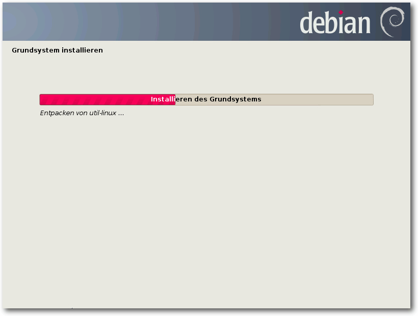
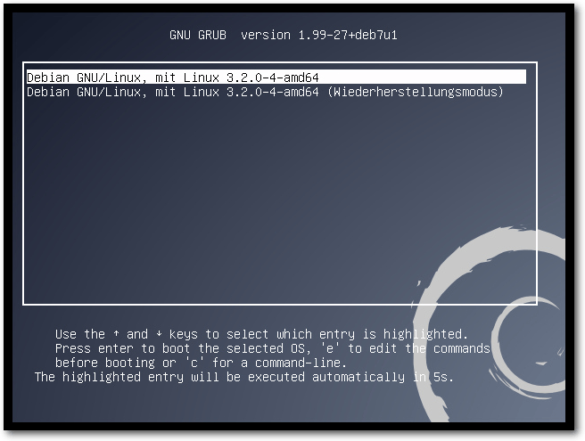
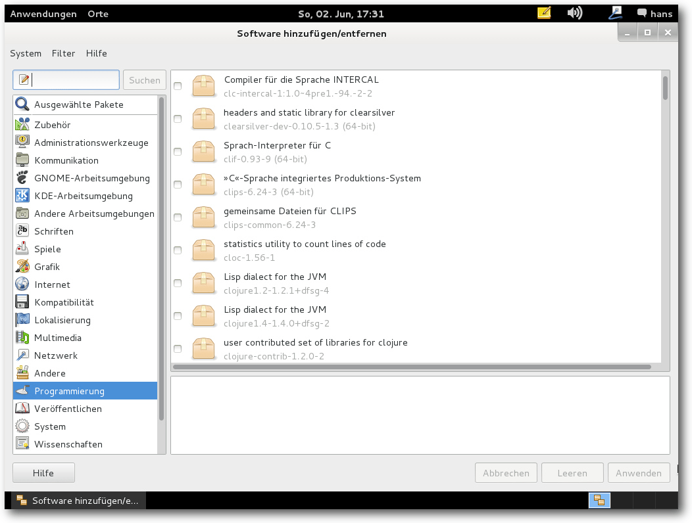
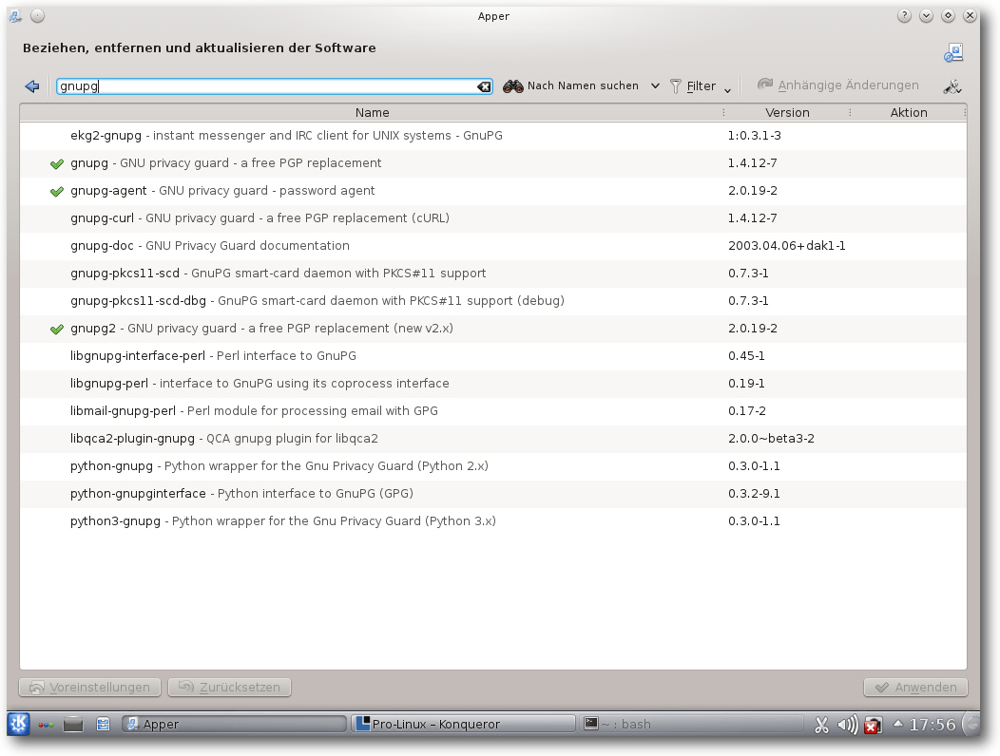

freiesMagazin Juli 2013
(ISSN 1867-7991)
Topthemen dieser Ausgabe
Debian GNU/Linux 7.0 WheezyÜber zwei Jahre hat das Debian-Projekt unermüdlich gearbeitet, um den Nachfolger von Debian 6.0 „Squeeze“ fertigzustellen. Der Artikel stellt Debian 7.0 „Wheezy“ mit einem Fokus auf die Neuheiten dieser Version vor. Debian ist dabei mit seinen zahlreichen Derivaten sicherlich eine der wichtigste Linux-Distributionen überhaupt. (weiterlesen)
Ein Blick auf Android
Mittlerweile gibt es eine größere Anzahl von Betriebssystemen und Plattformen für mobile Endgeräte wie Smartphones und Tablets. Viele davon setzen auf einen Linux-Kernel. Android ist dabei die weltweit verbreitetste Plattform. Der Artikel geht grundsätzlich auf das Betriebssystem ein und somit weniger auf dessen Bedienung. (weiterlesen)
Dear Esther – Briefe eines Unbekannten
Das Spiel Dear Esther gibt es bereits seit 2010. Die Linux-Version erschien im Humble Indie Bundle 8. Der Artikel soll das ungewöhnliche Spiel vorstellen. In ihm übernimmt man die Rolle eines namenlosen Helden, der auf einer einsamen Insel umherirrt und nach und nach mit seiner Vergangenheit konfrontiert wird. (weiterlesen)
Zum Index
Inhalt
Linux allgemeinDebian GNU/Linux 7.0 Wheezy
Ein Blick auf Android
Der Juni im Kernelrückblick
Anleitungen
Firefox-Erweiterungen mit dem Add-on-SDK erstellen – Teil V
Software
Dear Esther – Briefe eines Unbekannten
Community
Rezension: Einstieg in PHP 5.5 und MySQL 5.6
Rezension: Softwarequalität in PHP-Projekten
Rezension: Computer-Netzwerke: Grundlagen, Funktionsweise, Anwendung
Magazin
Editorial
Leserbriefe
Veranstaltungen
Vorschau
Konventionen
Impressum
Zum Index
Editorial
Sommerpause schon vorbei?
Im letzten Editorial von freiesMagazin 06/2013 [1] haben wir die Wahrscheinlichkeit erwähnt, dass die Juliausgabe eine Woche später erscheint. Wie Sie sehen, ist dem nicht so. Trotz Abwesenheit haben wir es irgendwie geschafft, die Ausgabe rechtzeitig zu veröffentlichen. Sicherlich ist der Umfang nicht ganz so groß, aber dies hat andere Gründe … … denn auch wenn bei uns die Sommerpause vorbei ist, nehmen sich die zahlreichen freiwilligen Autoren, die für freiesMagazin schreiben, von Juni bis September ebenfalls ihre verdiente Auszeit. Das führt also dazu, dass die kommenden Ausgaben unter Umständen einen geringeren Umfang haben als sonst. Wer doch daheim bleibt und Zeit hat, kann sich ja überlegen, selbst einmal den virtuellen Stift für das Magazin zu schwingen. Schreiben Sie uns unterDRM? Nein, danke!
Ein Thema, was die Freie-Software-Szene immer wieder bewegt, ist auch das Thema „Freie Inhalte“. Damit hängt auch das Digitale Rechte-Management (DRM) zusammen. Die Medienersteller (seien es Musik, Bücher, Spiele oder Videos) setzen verschiedene DRM-Techniken ein, damit die Rechte des Kunden beschnitten werden. Ein E-Book immer und überall und auf jedem Gerät lesen? Nein, gewiss nicht! Musik unterwegs, aber auch daheim auf CD hören? Oft nicht erlaubt! Da ist es schön, wenn es immer wieder mal Ausnahmen hiervon gibt. Die Humble-Bundle-Macher haben ein zweites Paket mit DRM-freien Büchern zusammengeschnürt [2]. Für einen selbstgewählten Preis erhält man vier Sci-Fi-/Fantasy-Bücher. Bezahlt man mehr als ca. 9,50 US-Dollar, gibt es noch zwei Bücher dazu. Dies zeigt, dass man auch ohne DRM-Schutz mit geistigem Eigentum Geld verdienen kann. Sicherlich ist der Preis pro Buch wesentlich geringer als bei einem gewöhnlichen Buch, dafür geht das Geld bei der Aktion direkt an die Autoren und nicht an irgendwelche Zwischenhändler und Verlage. Vielleicht setzt sich das Modell der Selbstvermarktung in Zukunft noch mehr durch. Und nun wünschen wir viel Spaß beim Lesen der neuen Ausgabe. Ihre freiesMagazin-Redaktion Links[1] http://www.freiesmagazin.de/freiesMagazin-2013-06
[2] http://www.humblebundle.com/
Das Editorial kommentieren
Zum Index
Debian GNU/Linux 7.0 Wheezy
von Hans-Joachim Baader Über zwei Jahre hat das Debian-Projekt unermüdlich gearbeitet, um den Nachfolger von Debian 6.0 „Squeeze“ fertigzustellen. Dieser Artikel stellt Debian 7.0 „Wheezy“ mit einem Fokus auf die Neuheiten dieser Version vor. Redaktioneller Hinweis: Der Artikel „Debian GNU/Linux 7.0 Wheezy“ erschien erstmals bei Pro-Linux [1].Vorwort
Debian GNU/Linux bezeichnet sich als „das universelle Betriebssystem“ und ist zweifellos die größte Distribution, die unabhängig von einem Unternehmen entwickelt wird – sowohl hinsichtlich der Entwickler- als auch der Anwenderzahl. Debian steht auf eigenen Füßen und bildet die Basis für viele weitere Distributionen, ganz besonders Ubuntu. Mehrere sehr große Installationen wie das System der Münchner Stadtverwaltung oder das der spanischen Provinz Extremadura beruhen auf Debian. Die neue Version 7.0 „Wheezy“ war plangemäß Mitte 2012 eingefroren worden, um den letzten Feinschliff für die Veröffentlichung zu erhalten. Dieser Feinschliff hatte schon beim Vorgänger fast acht Monate gedauert; bei Wheezy wurden daraus volle zehn Monate. Natürlich führt das zwangsläufig zu neuen Diskussionen [2], wie man die Freeze-Phase verkürzen könnte. Es bleibt abzuwarten, was daraus wird. Auf jeden Fall wurde die Freeze-Phase wie geplant erreicht, sodass sie genau zwei Jahre nach der vorherigen beginnen konnte. Die lange Freeze-Phase führt dazu, dass keine in Debian vorhandene Software jünger als zehn Monate ist, diverse Pakete sind sogar deutlich älter. Doch wenn man ehrlich ist, gibt es im Verlauf von zwei Jahren vielleicht höchstens ein Dutzend Pakete, bei denen man eine neuere als die angebotene Version wirklich benötigt. Um diese zu bekommen, gibt es genug Möglichkeiten. Auf der Habenseite steht dagegen, dass die Software bereits zehn Monate oder mehr von einer großen Gemeinschaft getestet wurde. Dies führt zu einer Qualität, die Debian mühelos für alle kritischen Aufgaben, sei es privat oder in Unternehmen, geeignet macht. Und den Aufwand der Aktualisierung muss man nur alle zwei Jahre einmal einplanen. Der Support für Debian 6.0 „Squeeze“ wird voraussichtlich erst im Mai 2014 eingestellt. Es ist also noch reichlich Zeit für ein Update. Es sei angemerkt, dass es sich hier nicht um einen Test der Hardware-Kompatibilität handelt. Es ist bekannt, dass Linux mehr Hardware unterstützt als jedes andere Betriebssystem, und das überwiegend bereits im Standard-Lieferumfang. Ein Test ist damit überflüssig, und es wäre zu viel Aufwand für wenig Nutzen, eine repräsentative Auswahl von Hardware zu beschaffen. Zwar läuft Debian auf allen meinen Rechnern und meine Desktopsysteme waren bereits seit mehr als einem Jahr auf Wheezy umgestellt und machten alle Aktualisierungen mit, aber virtuelle Maschinen sind die einzige praktikable Möglichkeit, ein unverändertes System zu zeigen. Für den Artikel werden daher zwei identische virtuelle Maschinen (eine für GNOME, eine für KDE), 64 Bit, unter KVM mit jeweils einem GB RAM verwendet.Unterstützte Systeme
Anders als viele andere Distributionen beschränkt sich Debian nicht auf die x86-Architektur in ihren 32- und 64-Bit-Varianten. Die unterstützten Architekturen sind jetzt, nachdem armhf (ARM mit Hardware-Gleitkomma) und s390x (eine 64-Bit-Portierung für IBM System z-Maschinen) hinzukamen, auch SPARC, PowerPC, MIPS (in Big und Little Endian), Itanium, S/390 und ARM EABI. Das System lässt sich auf verschiedenen ARM-basierten Geräten installieren, darunter Buffalo Linkstation LiveV3 (LS-CHL), Buffalo Linkstation Mini (LS-WSGL), Toshiba AC100, MX53 LOCO Board, OMAP4 Pandora und Genesi Efika MX Nettops und Smarttops. Zu den Linux-Architekturen kommen kfreefsd-amd64 und kfreefsd-i386, bei denen der Linux-Kernel durch einen FreeBSD-Kernel (8.3 und 9.0 stehen zur Auswahl) ersetzt wurde. Diese dürften nur für eine Handvoll Leute von Interesse sein und sind nach Projektangaben zumindest im Desktop-Bereich noch nicht so gut benutzbar wie die Linux-Varianten, für den Server-Einsatz aber durchaus ausgereift genug. Neben den offiziellen Portierungen existieren weitere, nicht ganz aktualisierte oder noch unvollständige Portierungen. Damit unterstützt Debian fast alle Architekturen, auf denen der Linux-Kernel läuft. Prinzipiell bietet Debian Platz für jede Architektur, wenn sich Freiwillige dafür finden. Die Portierungen-Seite [3] listet sie alle auf.Neu in Debian 7.0
Eine der größten Neuerungen [4] ist die Multiarch-Unterstützung, die eines der Hauptziele für die Veröffentlichung von „Wheezy“ war. Sie erlaubt Benutzern, Pakete unterschiedlicher Architekturen auf einem System zu installieren, wobei sämtliche Abhängigkeiten automatisch aufgelöst werden. Findet man beispielsweise für eine bestimmte Software nur 32-Bit-Pakete, benutzt aber ein 64-Bit-x86-System, dann kann man jetzt das 32-Bit-Paket problemlos installieren und nutzen. Der Installationsprozess wurde erheblich verbessert: Debian kann nun mit Hilfe von Sprachsynthese installiert werden, was vor allem sehbehinderten Personen entgegen kommt, die keine Braille-Zeile benutzen. Die Sprachsynthese ist in mehr als einem Dutzend Sprachen verfügbar, das System insgesamt in 74 Sprachen. Außerdem unterstützt Debian erstmals die Installation und den Betrieb auf 64-Bit-PCs mit UEFI (amd64), allerdings noch ohne „Secure Boot“. Die Distribution enthält jetzt über 36.000 Pakete, die aus knapp 17.500 Quellpaketen erstellt wurden. Die Multimedia-Bibliothek ffmpeg wurde durch libav ersetzt, einem Fork von ffmpeg, der mehr Stabilität verspricht. Mehr noch, Debian verspricht, dass die Zeiten der verkrüppelten Multimedia-Unterstützung vorüber sind, und liefert alle frei verfügbaren Codecs im Main-Archiv mit. Der Standard-Desktop von Debian 7.0 ist GNOME 3.4, nachdem zwischenzeitlich (aber letztendlich nicht abgesegnet) Xfce zur Standardumgebung gemacht wurde. Zahlreiche weitere Desktopumgebungen und Window-Manager stehen zur Verfügung, darunter KDE 4.8.4, Xfce 4.8 und LXDE. Eine kleine Auswahl der angebotenen Pakete ist Apache 2.2.22, Asterisk 1.8.13.1, GIMP 2.8.2, GNU Compiler Collection 4.7.2, Icedove 10 (eine abgewandelte Version von Mozilla Thunderbird), Iceweasel 10 (eine abgewandelte Version von Mozilla Firefox), LibreOffice 3.5.4, MySQL 5.5.30, Nagios 3.4.1, OpenJDK 6b27 und 7u3, Perl 5.14.2, PHP 5.4.4, PostgreSQL 9.1, Python 2.7.3 und 3.2.3, Samba 3.6.6, Apache Tomcat 6.0.35 und 7.0.28, Xen 4.1.4 und X.Org 7.7. Debian ist konform zur LSB 4.1 mit einer Ausnahme: Qt 3 ist nicht mehr enthalten. Die Verbesserung der Qualität der Pakete war ein Veröffentlichungsziel und die Startgeschwindigkeit des Systems wurde erhöht. Die Distribution unterstützt IPv6 vollständig und das Standard-Dateisystem ist nun ext4 statt ext3. Btrfs kann verwendet werden, wenn eine separate /boot-Partition angelegt wird. Netzwerk-Blockgeräte werden jetzt unterstützt. Das abhängigkeitsbasierte Booten ist jetzt ständig aktiviert. Debian 7.0 setzt weiter auf SysVinit als Init-System, jedoch ist Systemd als Technologievorschau enthalten und kann zum Testen problemlos parallel zu SysVinit installiert werden. Debian 7.0 bringt auch verbesserte Unterstützung für VoIP. So soll SIP-Telefonie auch über Firewalls hinweg möglich sein. Dazu werden unter anderem reTurn server, repro SIP proxy und dlz-ldap-enum mitgeliefert. Im Bereich der Sicherheit wurde einiges getan: Zweifaktor-Authentifikations-Tokens mittels Open Authentication [5] (OATH), OpenID 2.0 via SimpleID und AppArmor werden unterstützt. Auch für die Cloud ist Debian 7.0 bereit. Es enthält sowohl die OpenStack-Suite als auch die Xen-Cloud-Platform (XCP); diese erlauben dem Benutzer, eine eigene Cloud-Infrastruktur zu erstellen. Debian-Images werden auch auf den maßgeblichen öffentlichen Cloud-Plattformen angeboten, inklusive Amazon EC2, Windows Azure und Google Compute Engine. Der Kernel ist in den Linux-Varianten von Debian 7.0 Linux 3.2. Wo es für die Unterstützung neuer Hardware nötig ist, wurden allerdings Treiber aus neueren Kernel-Versionen zurückportiert. In der aktuellen Version kamen viele Treiber hinzu, darunter Netzwerk-, WLAN-, USB- und Festplatten-Controller-Treiber. Weitere Einzelheiten enthalten die umfangreichen Anmerkungen [6] zur Veröffentlichung.Installation
Die Neuerungen im Debian-Installer wurden im vorhergehenden Abschnitt schon angesprochen. Für eine Installation auf einen PC ändert sich jedoch nicht viel. Die Installation bietet schon beim Booten viele Optionen, zum Beispiel eine textbasierte und eine grafische Installation, normale oder Experteninstallation, automatische Installation, Installation einer spezifischen Desktopumgebung und noch mehr. Die Standard-Desktop-Umgebung ist GNOME, trotz der vorübergehenden Diskussion, Xfce zur Standardumgebung zu machen. Will man eine andere Umgebung, so kann man schon im Bootmenü des Installers unter „Alternative Desktop Environments“ KDE, Xfce oder LXDE auswählen. Und wenn einem das alles nicht passt, macht man eine Minimalinstallation und erweitert diese später.Bootprompt der Debian-7.0-Installationsmedien.
Es stehen umfangreiche Installationshandbücher [7] auf der Debian-Webseite zur Verfügung, für jede Architektur ein eigenes und jeweils in mehrere Sprachen übersetzt. Besucher der Webseite bekommen das Dokument automatisch in ihrer Sprache zu sehen, wenn ihr Browser korrekt eingestellt und die Sprache verfügbar ist. Man muss dieses Handbuch nicht komplett durchlesen, als Referenz kann man in Zweifelsfällen aber immer darauf zurückgreifen. Die empfohlene minimale RAM-Größe ist 512 MB, für ein System ohne Desktop 256 MB. Als Minimum gelten 128 MB für ein Desktop-System und 64 MB für ein Konsolen/-Server-System. Unter Umständen kann man mit noch weniger RAM auskommen, dafür gibt es eigens einen Low-Mem-Modus des Installers. Zu empfehlen sind für flüssiges Arbeiten mit dem Desktop, insbesondere KDE oder GNOME, mindestens ein GB.
Sprachauswahl bei der Installation.
Ein Großteil der Hardware wird automatisch erkannt und Hardware-spezifische Pakete werden automatisch installiert. Wenn man während der Installation eine gute Netzwerkanbindung besitzt, ist das Netzwerk-Installations-Image (ca. 150 MB) eine gute Option. Im folgenden Beispiel wurde im Bootmenü die grafische Installation und KDE gewählt. Nachdem das Installationsprogramm gestartet ist, wählt man zunächst die Sprache aus. Es werden nun 74 Sprachen unterstützt, vier mehr als in der Vorversion. Dann wählt man den Standort (und die Zeitzone, falls das gewählte Land mehr als eine Zeitzone hat), darauf die Tastatur. Leider wird an dieser Stelle nur eine Standard-Tastaturbelegung angeboten, eine verfeinerte Auswahl kann man erst nach der Installation vornehmen, wozu man entweder das Kommando dpkg-reconfigure keyboard-configuration oder die grafischen Werkzeuge der Desktopumgebungen nutzen kann.
Benutzer und Passwörter einrichten.
Nach dem Nachladen verschiedener Komponenten, das ein wenig dauern kann, will das System den Rechnernamen wissen, dann den Domainnamen. Findet das System bereits über DHCP diese Informationen heraus, dann entfallen diese beiden Schritte. Bevor DHCP möglich ist, kann es jedoch erforderlich sein, Firmware in die Netzwerk-Hardware zu laden. Freie Firmware bringt Debian bereits mit, doch es gibt auch Hardware, die unfreie Firmware benötigt. Da Debian diese nicht mehr mitliefert (außer auf den non-free-Images), muss man diese nachzuladen. Alles Nötige hierfür hat der Installer bereits vorgesehen. Ob WLAN- oder normale LAN-Chips, USB-Geräte oder spezielle Festplattencontroller, wenn der Installer eine benötigte Firmware nicht vorfindet, sucht er selbstständig auf Disketten oder USB-Sticks danach. Wie man ein passendes Medium vorbereitet, ist im Installationshandbuch beschrieben. Oft ist die Firmware als separates Paket in der Non-Free-Sektion des Archivs verfügbar, nur in wenigen Fällen dürfte es nötig sein, die Download-Seiten des Herstellers abzugrasen. Dies muss aber vor der Installation geschehen.
Wahl der Partitionierungsmethode.
Nach der Komplettierung der Netzwerkeinrichtung ist ein Root-Passwort einzugeben, wobei Debian auch schwache Passwörter akzeptiert. Das Passwort kann auch leer gelassen werden, was zu einer Ubuntu-ähnlichen Einrichtung führt, bei der man nur mit sudo zum Root-Account wechseln kann.
Erstellen einer Partition.
Darauf kann man einen separaten Benutzer anlegen. In aufeinanderfolgenden Dialogen werden der vollständige Name, der Name des Benutzerkontos und das Passwort abgefragt. Man hätte an verschiedenen Stellen mehrere dieser Dialoge zusammenlegen und die Installation damit etwas straffen können. Leider hat sich diesbezüglich gegenüber Debian 6.0 nichts getan, andererseits hält es nicht wesentlich auf. Eine Installation von Ubuntu, openSUSE, Mandriva oder Fedora mag eleganter wirken, in Sachen Features und Flexibilität dürfte Debian aber kaum zu übertreffen sein.
Formatierung einer Partition.
Nun kommt man zur Partitionierung, einem Punkt, der mit fünf Klicks auf „Weiter“ und einer Bestätigung erledigt werden, aber auch längere Zeit in Anspruch nehmen kann. Wenn man sein System für eine langfristige und/oder komplexe Nutzung auslegt, lohnt sich diese Investition. Dazu wählt man „Manuelle Partitionierung“. Nun kann man völlig frei partitionieren, LVM, Software-RAID (einschließlich Fake-RAID), Verschlüsselung und Multipath in beliebigen Kombinationen einsetzen und die Dateisysteme und Mount-Punkte zuweisen. Alles lässt sich wieder rückgängig machen, außer der Einrichtung von LVM, die vor der weiteren Arbeit auf die Platte gespeichert werden muss. Dabei schließt das Programm unmögliche oder problematische Konfigurationen aus bzw. warnt vor diesen. Angebotene Dateisysteme sind ext2, ext3, ext4 (Standard), btrfs, jfs, xfs, FAT16, FAT32, sowie qnx4 und NTFS (nur lesend). 
Installation des Grundsystems.
Nach der Partitionierung und Formatierung folgt die Installation des Basissystems, während derer man sich anderen Dingen widmen kann. Danach kann man weitere Software nach groben Kategorien auswählen. Standardmäßig sind „Debian desktop environment“ und „Standard-Systemwerkzeuge“ aktiviert. Falls die Pakete aus dem Internet heruntergeladen werden müssen, wird zuvor der Paketmanager konfiguriert. Auch die folgende Installation dauert eine Weile. Man hätte diese Auswahl vorziehen sollen, wodurch es nicht nötig wäre, zwischendurch an den Rechner zurückzukommen. Nach dem erfolgreichen Abschluss der Installation kann man den Bootloader installieren lassen. Standardmäßig installiert Debian GRUB 2 im Bootsektor, doch wenn man „nein“ wählt, kann man ein Gerät für die Installation auswählen. Nun ist das Ende der Installation erreicht und man kann das neue System starten.
Softwareauswahl bei der Installation.
Update
Das Update einer bestehenden Debian-Installation ist möglich und sollte reibungslos funktionieren. Dabei gibt es allerdings einige Einschränkungen. So können installierte Pakete aus externen Repositorys (darunter auch debian-backports) Probleme bereiten. Dennoch kann man zunächst das Update normal probieren; sollten Probleme auftreten, kann man die betroffenen Pakete entfernen und später ggf. in einer neueren Version wieder installieren. Auch ohne externe Pakete wird ein direktes apt-get dist-upgrade meist nicht zum Erfolg führen und beispielsweise viele Pakete zum Entfernen vorschlagen, die man eigentlich behalten will. Die Lösung ist ein Update in zwei (oder noch mehr) Schritten, bei dem man zuerst apt aktualisiert. Nichtsdestotrotz muss festgehalten werden, dass ein Online-Update nicht das selbe Ergebnis liefert wie eine Neuinstallation. Der Hauptgrund dafür sind diverse Pakete, die in der neuen Version durch andere ersetzt wurden. Als Beispiel könnte man PostgreSQL 8.4 nennen, das nicht automatisch auf 9.1 aktualisiert wird. Ähnlich ist es mit Python, MySQL und anderen. Wer portmap einsetzt, sollte manuell auf rpcbind umstellen, sun-java6 sollte man durch openjdk-7 und gdm durch gdm3 ersetzen. Weitere Pakete listet Kapitel 4.8 der Anmerkungen zur Veröffentlichung auf. Debian 7.0 enthält jetzt Multiarch, das es erlaubt, Pakete unterschiedlicher Architekturen auf dem selben System zu installieren. Das Paket ia32-libs wurde zu einem Übergangspaket, um diese neue Funktionalität nutzen zu können. Wenn man ia32-libs installiert hat, muss man Multiarch mit dem Befehl# dpkg --add-architecture i386
aktivieren, bevor man dieses Paket aktualisiert.
Andernfalls wird apt die folgende Meldung anzeigen:
Die folgenden Pakete haben unerfüllte Abhängigkeiten:
ia32-libs: Hängt ab von: ia32-libs-i386 ist aber nicht installierbar
E: Beschädigte Pakete
Natürlich wird ein Update nur von der direkten Vorgängerversion 6.0 „Squeeze“
unterstützt. Alle
Einzelheiten zum Update sind in einem eigenen Kapitel der
Anmerkungen zur Veröffentlichung ausführlich erläutert.
ia32-libs: Hängt ab von: ia32-libs-i386 ist aber nicht installierbar
E: Beschädigte Pakete
Laufender Betrieb
Debian 7.0 startet schnell, die genauen Werte sind natürlich Hardware-abhängig. Wie gehabt werden je nach Desktopsystem unterschiedliche Display-Manager eingesetzt. Wurde GNOME installiert, dann startet Debian mit dem Display-Manager gdm3, für KDE ist es kdm. Das ergibt Sinn, da diese Display-Manager für die jeweilige Desktopumgebung optimiert sind und sich am besten in dieser integrieren. Bei Xfce kommt LightDM zum Einsatz. Der Login-Bildschirm wurde in allen Fällen mit einem neuen Debian-Design versehen. Dieses neue Design, dieses Mal mit einem schlichten Debian-Logo, ist vom Bootloader bis zum Desktop durchgängig. Bootprompt von GRUB 2 in Debian 7.0.
GNOME ist in Version 3.4 enthalten, da GNOME 3.6 erst nach dem Freeze-Termin erschien. Wer GNOME einsetzt, darf sich auf eine Überraschung gefasst machen: Im Ausweichmodus, der dann zum Zug kommt, wenn die Grafiktreiber keine 3D-Beschleunigung bereitstellen, sieht die Debian-Implementierung von GNOME 3.4 fast exakt so aus wie GNOME 2 in den letzten Versionen. Zudem benötigt der GNOME-Desktop mit einem Terminalfenster ohne weitere offene Programme nur 180 MB, ist vertraut und flink. Der Speicherverbrauch ist damit nicht einmal halb so hoch wie bei KDE/GNOME 3/Unity in anderen Distributionen.
GDM 3 als Display-Manager für GNOME.
Der Ausweichmodus kann auch explizit gewählt werden, wenn man die GNOME-Shell von GNOME 3 nicht ausstehen kann. Ansonsten kommt auch bei Debian die GNOME-Shell zum Einsatz, wofür aber kein Testsystem zur Verfügung stand.
KDM als Display-Manager für KDE.
KDE hingegen, das in Version 4.8.4 enthalten ist, benötigt etwa 380 MB. Es sei darauf hingewiesen, das es nicht so einfach ist, den Speicherverbrauch der Desktops anzugeben. Schwankungen von 20 MB und mehr nach oben und unten sind möglich, je nach dem Zeitpunkt der Messung. Dies erklärt sich teils daraus, dass manche Programme bei ihrem Start einen oder mehrere Dienste starten. Diese Dienste werden bei Nichtbenutzung teilweise nach einiger Zeit auch wieder beendet. Die obigen Angaben sollten einen Mittelwert darstellen, der aber auch wieder je nach Hardware unterschiedlich sein kann.
GNOME-Desktop im Ausweichmodus.
Bei der Geschwindigkeit lässt sich kein nennenswerter Unterschied zwischen den Desktops feststellen, sofern genug RAM vorhanden ist. Ein GB RAM sind unabhängig vom Desktop zu empfehlen, da Browser und viele andere Programme sehr viel RAM belegen können. Allerdings dürfte sich kaum ein Rechner aus den letzten zehn Jahren finden, der weniger RAM besitzt, ausgenommen eingebettete und kleine mobile Systeme.
Der KDE-Desktop.
Zu den standardmäßig installierten Programmen unter GNOME gehören LibreOffice 3.5.6, der Mail- und Kalender-Client Evolution, GIMP 2.8.2, Inkscape 0.48.3.1, Rhythmbox 2.97, Shotwell 0.12.3, Tomboy und damit auch Mono. Das Videokonferenzprogramm Ekiga wurde durch Empathy ersetzt, das dessen Funktionalität größtenteils abdecken soll. GStreamer 0.10 und PulseAudio 2.0 werden standardmäßig installiert. Der Standard-Browser unter GNOME ist nun Iceweasel, die Debian-Variante von Firefox, in Version 10.0.12. Wichtig zu wissen ist, dass Debian nicht den üblichen Support für alle auf Gecko oder Webkit beruhenden Browser bereitstellt, da diese zu schnelllebig sind und es Distributionen zu schwer gemacht wird, Sicherheitskorrekturen zurückzuportieren. Daher wird empfohlen, sich eine aktuelle Browser-Version selbst zu installieren und den mitgelieferten nur für vertrauenswürdige Webseiten zu verwenden. Wie man jedoch einer aktuellen Sicherheitsmeldung [8] entnehmen kann, aktualisiert Debian den Browser Iceweasel auf Version 17, die der langfristig unterstützten Version Firefox 17 ESR entspricht. Wenn die Unterstützung seitens Mozilla für diese Version ausläuft, wird Debian auf die Nachfolgeversion (vermutlich Firefox 24 ESR) wechseln). Vorinstallierte Plugins von Iceweasel sind die GNOME Shell-Integration, ein iTunes Application Detector und der freie Flash-Player Gnash 0.8.11. An Erweiterungen ist nur Adblock Plus 2.1 vorinstalliert. KDE ist in Version 4.8.4 enthalten, nach Version 4.4.5 in Debian 6.0, das die erste KDE-4-Version in Debian darstellte. Der Standard-Browser ist Konqueror, Iceweasel wird aber ebenfalls installiert. Die Konfiguration von Iceweasel ist aber eine andere als unter GNOME. An Plugins ist nur „Skype Buttons für Kopete“ vorinstalliert. Erweiterungen sind dagegen in der Grundausstattung keine vorhanden. Die KDE-PIM-Suite blieb bei Version 4.4 und erfuhr nur ein kleines Update auf 4.4.11. Daneben sind auch LibreOffice und GIMP vorhanden, darüber hinaus außer den zu KDE gehörenden Programmen nur wenig. Als Medienplayer ist VLC 2.0.3 installiert.
GNOME mit Iceweasel.
Debian installiert die Schriften DejaVu (die eine recht große Unicode-Abdeckung besitzt), Liberation von Red Hat und diverse andere. Viele weitere sind im Archiv zu finden. Während die vorinstallierte Auswahl wenig Änderungen erfuhr, hat sich intern einiges getan, was aber wohl erst in der nächsten Version voll zum Tragen kommen wird. Die Namen vieler Schriftpakete wurden von ttf- auf font- umgestellt und das OpenType-Format wird TrueType allmählich ersetzen.
KDE mit Konqueror.
Abseits des Desktops bietet Debian eine sehr große Zahl von Tools, stellt sich aber auch der manuellen Änderung der Konfigurationsdateien nicht in den Weg. Debian hat teils recht aufwändige Konstrukte entwickelt, um die vom System vorgegebene und die von den Nutzern geänderte Konfiguration zu trennen und die Verwaltung so einfach wie möglich zu machen. Oft muss man erst die README-Datei lesen, um sich mit dem Debian-System vertraut zu machen. Es lohnt sich fast immer, eigene Änderungen an die Debian-Vorgaben anzupassen, da man sonst alles selbst machen muss, Sicherheits-Updates eingeschlossen. Jedes Tool und jede Konfigurationsdatei ist in einer Manpage dokumentiert, was von den Debian-Richtlinien vorgeschrieben ist und auch eingehalten wird. Diese Dokumentation vermisst man bei vielen anderen Distribution schmerzlich. Für die Debian-Entwickler gehören Manpages zu den Dingen, die die Qualität einer Distribution ausmachen. Die Java-Umgebung von Debian ist jetzt OpenJDK 7. Auch Softwareentwickler, die mit anderen Programmiersprachen arbeiten, kommen mit Debian voll auf ihre Kosten. Neben den Klassikern Perl 5.14.2, Python (jetzt in Version 2.7.3 und 3.2.3) und PHP (Version 5.4.4), zu denen jeweils zahlreiche Module paketiert wurden, findet man auch zahlreiche weitere Compiler und Interpreter mit zusätzlichen Bibliotheken und Modulen vor.
Multimedia
Es mag viele Benutzer überraschen, obwohl es schon in der Vorversion so war, dass Debian Codecs für alle populären Multimediaformate mitliefert und somit ohne jede Umstände, die man in manch anderen Distributionen hat, über vollständige Multimedia-Unterstützung verfügt. Es sollte bekannt sein, dass das einzige Problem dieser Codecs ist, dass sie von Softwarepatenten betroffen sind. Dies gilt hauptsächlich für die USA und Japan, in geringerem Maße für die EU. Somit laufen unter Debian MP3 und alle Videoformate ohne Zutun, auch Flash-Videos. Lediglich Youtube arbeitet nicht mit dem Gnash-Plugin zusammen, das in Version 0.8.11 enthalten ist. Für diese und wohl auch andere Video-Seiten muss man im Moment noch den Adobe Flash Player nachrüsten, wenn man Firefox als Browser benutzt. Eine Alternative dazu ist Google Chrome. Beim Abspielen von Videos mit MPlayer kann es zu kurzen, aber regelmäßigen Aussetzern kommen, zumindest dann, wenn man als grafisches Frontend smplayer nutzt. Der CPU-Bedarf von MPlayer ist auch massiv höher, wenn es über smplayer aufgerufen wird, als bei einem direkten Aufruf. Die Lösung besteht darin, eine MPlayer-Version vom Debian Multimedia-Projekt zu installieren. Dieses ist jetzt nach einigen Differenzen mit dem Debian-Projekt unter der URL deb-multimedia.org [9] zu finden, existiert aber immer noch. Wenn man in die Datei /etc/apt/sources.list das Repositorydeb http://www.deb-multimedia.org/ wheezy main
einbindet und anschließend mit
# apt-get install mplayer=3:1.1-dmo9
(plus alle benötigten Abhängigkeiten) die DMO-Version von MPlayer installiert,
verschwinden die Probleme. Die Ursache ist nicht ganz klar. Auf jeden Fall ist
die MPlayer-Version in Debian selbst total veraltet (1.0-rc4), und auch die
mplayer2-Version von Debian kann das Problem nicht lösen. Die aktuelle Version
von MPlayer ist schon seit fast einem Jahr 1.1 und ist gleichzeitig diejenige, welche man von DMO
erhält.
Das Abspielen von DVDs wurde nicht getestet. Bei Problemen mit verschlüsselten
DVDs oder anderen Formaten sollte man das Repository von deb-multimedia.org
einbinden und die benötigten Codecs installieren.
Unter KDE fehlten im Dateimanager Dolphin die Zuordnungen der Dateiendungen mp3
und flv zu entsprechenden Abspielprogrammen. Der Player Dragonplayer war in der
Lage, beides abzuspielen. Ansonsten war auch unter KDE alles im grünen Bereich.
Paketverwaltung
Debian setzt nun auch auf PackageKit, das mit der eigenen Paketverwaltung apt zusammenarbeitet. Unter GNOME und KDE wird mindestens einmal pro Woche automatisch geprüft, ob Software-Updates vorliegen und das Vorhandensein von Updates angezeigt. Für die grafische Paketverwaltung steht gpk-application bereit, aber auch Synaptic, das keine Wünsche offenlässt, bis auf einen App-Store möglicherweise. Für diesen Zweck kann das Ubuntu Software Center Version 5.1.2 installiert werden. GNOME mit Paketverwaltung gnome-gpk.
Unter KDE wird nun Apper, der Nachfolger von KPackageKit, in Version 0.7.2 genutzt. Dieses Programm wurde auch von Kubuntu eingesetzt, bis es dort durch die Neuentwicklung Muon ersetzt wurde. Paket-Updates sind erfahrungsgemäß durch das Ausbleiben von Überraschungen gekennzeichnet. Neue Programmversionen bringt Debian während des Lebenszyklus der Distribution grundsätzlich nicht. Es werden lediglich Sicherheitslücken und kritische Fehler korrigiert. Wo andere Distributionen schon kurz nach der Veröffentlichung weit über 100 Updates bereitstellen (mussten), waren diese bei Debian noch an den Fingern einer Hand abzählbar. Zumindest beinahe, denn durch die Behebung von Sicherheitslücken in den X11-Bibliotheken kam es zu einer ungewöhnlich hohen Zahl von Updates. 
KDE mit Paketverwaltung Apper.
Kleinere Fehler in Anwendungen werden von Debian grundsätzlich nicht mehr korrigiert, wenn die Distribution veröffentlicht ist. Die Benutzer müssen selbst entscheiden, wie sie darauf reagieren. Schwerwiegende Fehler dagegen werden nach Möglichkeit im Rahmen der kleinen Distributions-Updates behoben, die alle paar Monate stattfinden. Geplant ist bereits die Herausgabe von Debian 7.0.1, weitere Versionen werden nach Bedarf folgen. Die meisten Benutzer können mit dem stabilen Distributionszweig auskommen, in den man in Einzelfällen bei Bedarf Aktualisierungen einbaut, vorzugsweise über backports.debian.org, notfalls auch über Debian Testing oder Unstable. Dies minimiert den Wartungsaufwand. Andere Möglichkeiten sind das Einbinden von externen Repositorys, das Importieren von RPM-Paketen mit alien, das Kompilieren von Hand und das Bauen von eigenen Paketen. Dies ist sicher keine vollständige Aufzählung. Wer Software von Hand kompiliert, wird das Programm checkinstall wahrscheinlich nützlich finden, das die Software als minimales Debian-Paket installiert.
Fazit
Obwohl über zwei Jahre vergangen sind, kann man über Debian 7.0 fast das gleiche sagen, was für Debian 6.0 galt. Trotz zahlreicher Updates ist Debian geblieben, was es ist, und die große Zahl der Nutzer wird das dankbar aufnehmen. Debian sieht sich als das „universelle Betriebssystem“ (was andere natürlich nicht ausschließt) und wird diesem Anspruch auch in der neuen Version 7.0 gerecht. Universell ist es hinsichtlich der Zahl der unterstützten Architekturen, aber auch hinsichtlich der Einsetzbarkeit – sei es als Desktop-, Laptop- oder Server-System oder auch als Betriebssystem für Smartphones, NAS-Geräte und vieles mehr. Die Installation kann von Einsteigern bewältigt werden, ohne Experten einzuschränken, auch wenn eine Installation mit weniger Klicks möglich und wünschenswert wäre. Die relativ sparsame Ausstattung mit Features sorgt für einen geringen Speicherbedarf in der Standardinstallation. In dem nicht zu lösenden Konflikt zwischen Aktualität und Stabilität setzt Debian klare Prioritäten. Das führt dazu, dass neue Debian-Versionen nicht so häufig erscheinen können und die Software etwas älter ist. Das heißt aber nicht, dass sie unbenutzbar ist; so manche Unternehmensdistribution ist mit deutlich älterer Software noch im Einsatz. Selbst diejenigen Benutzer, die immer das Neueste haben wollen, kann Debian im Prinzip bedienen. Es wird immer noch diskutiert, wie die Distribution in Zukunft vielleicht noch mehr Abstufungen zwischen Aktualität und Stabilität anbieten kann. Was dabei herauskommt, bleibt abzuwarten. Sicher ist, dass Debian weiterhin unverzichtbar ist. Mehr als tausend Mitarbeiter, von denen keiner vom Projekt direkt bezahlt wird, haben eine Distribution geschaffen, die nicht nur von vielen direkt genutzt wird, sondern mehr noch indirekt über die Distributionen, die von Debian abgeleitet sind. Debian feiert in diesem Jahr seinen 20. Geburtstag und steht offensichtlich besser da als je zuvor. Links[1] http://www.pro-linux.de/artikel/2/1632/debian-gnulinux-70-wheezy.html
[2] http://www.pro-linux.de/news/1/19778/vorschlag-fuer-ein-neues-veroeffentlichungsmodell-bei-debian.html
[3] http://www.debian.org/ports/
[4] http://www.debian.org/News/2013/20130504
[5] http://www.openauthentication.org/
[6] http://www.debian.org/releases/wheezy/releasenotes
[7] http://www.debian.org/releases/stable/installmanual
[8] http://www.pro-linux.de/sicherheit/2/21460/mehrere-probleme-in-iceweasel.html
[9] http://www.deb-multimedia.org/
| Autoreninformation |
| Hans-Joachim Baader (Webseite) befasst sich seit 1993 mit Linux. 1994 schloss er erfolgreich sein Informatikstudium ab und ist einer der Betreiber von Pro-Linux.de. |
Diesen Artikel kommentieren
Zum Index
Ein Blick auf Android
von Sujeevan Vijayakumaran Mittlerweile gibt es eine größere Anzahl von Betriebssystemen und Plattformen für mobile Endgeräte wie Smartphones und Tablets. Viele davon setzen auf einen Linux-Kernel. Android ist dabei die weltweit verbreitetste Plattform. Dieser Artikel geht grundsätzlich auf das Betriebssystem ein und somit weniger auf dessen Bedienung. Android gehört mit über 900 Millionen [1] aktivierten Geräten zu dem am weitest verbreiteten Betriebssystem auf mobilen Endgeräten. Offiziell wird Android von der Open Handset Alliance entwickelt und voran getrieben.Geschichtliches
Die Firma Android wurde ursprünglich von Andy Rubin im Jahr 2003 gegründet. Im Jahr 2005 erfolgte die Übernahme durch Google. 2007 fand die Gründung der „Open Handset Alliance“ [2] statt, welche offiziell die Entwickler von Android ist. Die Open Handset Alliance ist ein Zusammenschluss einer Vielzahl von Firmen wie Netzbetreibern, Software-Firmen, Marketing-Unternehmen, Firmen aus der Halbleiterindustrie sowie diversen Geräte-Herstellern. Dieses Konsortium wird von Google geleitet, welches die Entwicklung von Android maßgeblich steuert und vorantreibt. Die Android Version 1.0 wurde im September 2008 veröffentlicht. Die aktuellste Version ist 4.2.2 „Jelly Bean“, welche im November 2012 veröffentlicht wurde.Android Open Source Project
Der offizielle Name des Open-Source-Projekts von Android lautet „Android Open Source Project“ [3]. Hierbei handelt es sich um „nacktes“ Android, welches von der Open Handset Alliance bzw. von Google entwickelt wird. Geräte-Hersteller sowie Interessierte finden dort die Quellen von Android sowie Anleitungen, wie der Code kompiliert und portiert werden kann.Systemarchitektur
Android nutzt nicht einen gewöhnlichen Linux-Kernel sondern eine relativ stark modifizierte Version. Google hat dabei den Kernel soweit angepasst, dass dieser besser auf eingebetteten Geräten lauffähig ist, da der Standard-Linux-Kernel zu einer zu hohen Last führen würde. Ursprünglich setzte man beim Kernel auf die Linux-2.6-Reihe. Mittlerweile werden neuere angepasste Linux-Kernel verwendet, die bei vielen Geräten unterschiedlich sind. Zu den Anpassungen am Kernel gehören z. B. ein optimiertes Energie-Management oder die Ersetzung und Veränderung von verwendeten Treibern und Bibliotheken. Der unter Android verwendete Linux-Kernel enthält dabei auch nur die Treiber, die für das entsprechende Gerät notwendig sind. Darunter fallen Treiber für Kamera, WLAN, Audio, Flashspeicher und für weitere vorhandene Hardware-Schnittstellen sowie einem speziellen Binder IPC. Auf dem Linux-Kernel aufsetzend finden sich diverse Bibliotheken, darunter unter anderem SSL, SQLite, WebKit und einige weitere. Der Android-Kernel setzt im Gegensatz zum Linux-Kernel dabei nicht auf die C-Bibliothek Glibc [4] sondern auf Googles Eigenentwicklung Bionic libc [5]. Bionic libc wird speziell für Android von Google entwickelt. Es ist deutlich kleiner als Glibc, enthält allerdings deswegen auch deutlich weniger Funktionen. Bionic ist hingegen speziell an mobile Endgeräte sowie ARM-Prozessoren angepasst.Android-Laufzeitumgebung
In der Android-Laufzeitumgebung befinden sich zum einen die Java Core Bibliotheken sowie die Dalvik Virtual Machine. Die Dalvik VM ist eine virtuelle Maschine, in der die Android Apps ausgeführt werden. Android Apps werden in der Regel in Java geschrieben. Andere Sprachen sind auch möglich, allerdings ist Java Androids Programmiersprache der Wahl, womit auch das Android Framework umgesetzt ist. Der programmierte Java-Code wird zuerst in Java Bytecode, also .class-Dateien kompiliert. Diese sind in diesem Schritt noch kompatibel mit der Java Virtual Machine (JVM) [6]. Im Anschluss folgt dann die Konvertierung von den .class-Dateien zu einer einzelnen .dex-Datei. Diese ist nicht nur komprimiert, sondern auch nur noch kompatibel zur Dalvik VM.Android Systemarchitektur. © Smieh (CC-BY-SA 3.0)
{kind=link}
Die Dalvik VM [7] wurde speziell für langsame Prozessoren angepasst. Besonders zum Entstehungszeitraum von Android waren die eingesetzten ARM-Prozessoren noch durchaus leistungsschwach, was heute vor allem im Hinblick auf die aktuellen High-End-Geräte nicht mehr ganz zutrifft. Das gleiche gilt für den Arbeitsspeicher, sodass Dalvik VM ursprünglich speziell an Geräten mit wenig Arbeitsspeicher ausgerichtet war. Der dritte und letzte Punkt ist, dass es auf Betriebssystemen laufen soll, die über keinen Swap-Speicher [8] verfügen. Ein weiterer Unterschied zur Java VM ist, dass Dalvik VM eine Registermaschine [9] ist, während die Java VM einen Kellerautomat darstellt [10].
Application Framework
Androids Application Framework lässt sich in viele Teile gliedern. Darunter befindet sich unter anderem der Activity-, Window-, Package- und Notification-Manager. Jede installierte Android App läuft im System als eigenständiger Nutzer und bekommt vom System eine eindeutige ID zugewiesen, die jedoch nicht von einer App abfragbar ist. Das System legt für jede App dabei die Zugriffsrechte im Dateisystem fest, sodass keine App auf die Daten von anderen Apps zugreifen können. Eine App läuft stets in einem einzelnen Prozess, die in einer eigenen Dalvik VM läuft. Eine App kann dadurch nur auf seine eigenen Dateien zugreifen. Dies dient zur Sicherheit des gesamten Systems. Mit dazu gehören auch Zugriffe auf System-Komponenten, die standardmäßig nicht zugänglich sind. Gelockert wird dies durch Berechtigungen, die eine App „anmelden“ muss. Diese Berechtigungen müssen dabei explizit vom Benutzer abgenickt werden. Durch diesen Mechanismus, gewährt das System einer App Zugriffe auf diverse Inhalte vom System, etwa Zugriff auf das Internet oder auf Kontaktdaten aus dem Telefonbuch. Eine einzelne App kann aus verschiedenen Unterkomponenten bestehen. Es gibt Activities, Services, Content Providers sowie Broadcast Receivers. Eine Activity ist simpel ausgedrückt ein „Bildschirm“, der graphische Bedienelemente beinhaltet. Eine App besteht häufig aus mehreren Activities. Bei der Kontakte-App wäre die Ansicht der Kontakte beispielsweise eine Activity, ebenso wie das Anzeigen von Informationen zu einem einzelnen Kontakt. Eine weitere Komponente einer App ist ein Service. Ein Service läuft stets im Hintergrund und hat keine graphische Oberfläche. Es ist dafür gedacht, Tätigkeiten auszuführen, die nicht zwingend an eine Activity gebunden sind, etwa das Abrufen von E-Mails im Hintergrund oder das Abspielen von Musik. Ein Content Provider ist ein verteilter Speicher für verschiedene Anwendungen. Eine App kann dabei einen Content Provider zur Verfügung stellen, an dem dann mehrere Apps ihre Dateien sowohl abrufen als auch modifizieren können. Ein Broadcast Receiver lauscht auf Broadcast-Nachrichten vom System. Eine Broadcast-Nachricht ist eine Nachricht, die vom System ausgelöst wird und allen Apps auf dem Android-Gerät zur Verfügung stehen. Wenn die Kamera-App ein Foto geschossen hat, dann wird beispielsweise eine Broadcast-Nachricht gesendet. Alternativ gibt es auch eine Broadcast-Nachricht, wenn das System vollständig hochgefahren ist. Android besitzt ein interessantes Feature, um Komponenten von anderen Apps zu starten oder auch Daten von einer App zur nächsten App zu senden. Dies nennt sich „Intent“. Ein Intent ist eine „Absicht“, um eine bestimmte Aktion auszuführen. Intents werden sowohl innerhalb von Apps genutzt als auch als Kommunikationsmittel zu anderen Apps. Dadurch ergeben sich sehr gute und einfache Möglichkeiten Daten in einer App bzw. zwischen Apps zu transportieren. Intern erzeugt dabei das System einen neuen Prozess für die zu startende App, sofern sie sich nicht schon im Speicher befindet.Lizenzen
Das Android Open Source Project (kurz AOSP) nutzt maßgeblich die Apache License 2.0 [11]. Davon ausgenommen sind unter anderem Kernel-Patches, diese stehen unter der GPLv2 [12]. Jede Person, die an der Entwicklung von Android teilnehmen möchte, muss zuvor dem „Contributor License Agreement“ zustimmen. Die Änderungen am Linux-Kernel erfolgen öffentlich, sodass man die Entwicklung des AOSP-Kernels stets auf dem Blick haben kann. Anders sieht es wiederum mit dem restlichen Sourcecode aus, welchen Google unter der Apache License 2.0 stellt. Dieser wird stets hinter Googles verschlossenen Türen entwickelt und erst mit Freigabe einer neuen Version veröffentlicht. Das Verfahren wurde beim Release von Android 3.0 „Honeycomb” allerdings eine Weile ausgesetzt, sodass dessen Sourcecode-Veröffentlichung erst mit der Veröffentlichung von Android 4.0 erfolgte. Google erntete aus Seiten der Open-Source-Community durch dieses Verhalten enorme Kritik, da dies nicht für die Freiheit von Android sprach. Zu den Kritikern gehörte unter anderem Richard Stallman [13]. Nicht alles, was auf einem gängigen Android-Gerät standardmäßig installiert ist, ist Open Source. Vor allem die Google Apps stehen nicht unter einer Open-Source-Lizenz und sind definitiv Closed Source. Darunter fallen unter anderem GMail, Google Maps oder auch der Google Play Store samt Google Play Services.Android-Derivate
Es gibt diverse Android-Derivate, die hauptsächlich als ROMs bezeichnet werden. Der wohl bekannteste Vertreter ist dabei wohl Cyanogenmod [14]. Cyanogenmod ist ein Android-Derivat, welches maßgeblich von Steve Kondik, auch als „Cyanogen“ bekannt, initiiert wurde. Mittlerweile gehört Cyanogenmod zu den am meist genutzten Android Derivaten. Laut Aussagen des Projekts, ist es auf über 5 Millionen Geräten installiert. Die Palette an Geräten [15], auf denen Cyanogenmod lauffähig ist, ist riesig. Die Entwickler ergänzen nach eigenen Ermessen diverse Funktionen und machen die Nutzung dieser Features verfügbar. Insbesondere bietet Cyanogenmod häufig auch aktuellere Android-Versionen an, als es standardmäßig für ein Gerät gibt. Für die Nutzer bietet Cyanogenmod und andere ROMs die einzige Alternative, wenn Geräte von Hardware-Herstellern nicht mehr mit neueren Android-Versionen versorgt werden.Der Lock-Screen von Cyanogenmod.
„Replicant“ [16] ist ein weiteres Android-Derivat, welches im Vergleich zu Cyanogenmod allerdings den vollen Fokus auf den Open-Source-Gedanken setzt. Da ein Android-Gerät sehr viele verschiedene Hardware-Sensoren und Schnittstellen besitzt, braucht jeder/jede davon ihre eigenen Treiber. Viele Hardware-Hersteller liefern dabei die Treiber lediglich im binären Format aus, sodass sie nicht unter einer Open-Source-Lizenz stehen. Das Projekt Replicant ist hingegen vollständig Open Source, was ebenfalls das Ziel des Projektes ist. Neben den oben genannten Android-Derivaten gibt es noch zahlreiche weitere. Die Anzahl an Derivaten lässt sich kaum überblicken, da viele davon lediglich auf einzelnen Geräten lauffähig ist.
Google Play
Unter dem Namen „Google Play“ fasst Google seit 2012 viele seiner Dienste zusammen. Darunter den „Google Play Store“, der bis März 2012 noch „Android Market“ hieß und über den der Vertrieb von Apps lief. Seitdem sind noch einige Dienste hinzugefügt worden, etwa Google Music, Google Movies und Google Books. Etwas, was dem Endanwender verborgen bleibt, ist der Dienst „Google Play Services“. Hier bündelt Google diverse Programmierschnittstellen zu Google Maps, Google+ und weiteren Google-Diensten. Entwickler können mit den Google Play Services rund um die Google-Dienste Apps bilden, etwa die Verwendung von Google Maps innerhalb eigener Applikationen. Die Programmierschnittstellen aus den Google Play Services laufen auf einer breiten Masse an Android-Versionen, somit sind Features nicht an eine spezielle Android-Version gebunden. Alle Dienste unter dem Dach von Google Play stehen ebenfalls nicht unter einer Open-Source-Lizenz. Es gibt einige Apps, welche die Schnittstellen von Google Play Services nutzen. Nachteilig ist hierbei, dass die Google Play Services eben nur auf Geräten funktionieren, die auch die Google Play Services installiert haben. Dies sind in der Regel alle auf dem Markt erhältlichen Android-Geräte. Eine Ausnahme ist das Amazon Kindle Fire. Das Tablet von Amazon nutzt zwar selbst Android, allerdings hat Amazon das System stark modifiziert und kommt ohne den Google Play Store und somit auch ohne die Google Play Services aus. Auch andere Android-Derivate, die nicht die Google-Dienste installiert haben, können dann die Apps nicht nutzen, welche die Programmierschnittstellen der Google Play Services voraussetzen. Nutzer, die Apps installieren wollen, sind dabei stets auf den Google Play Store angewiesen, wofür eine explizite Registrierung bei Google notwendig ist. Anwender, die zwar Android nutzen möchten, allerdings freie Apps nutzen wollen, können sich als Alternative Apps über F-Droid [17] installieren. Dort finden sich lediglich Apps, die unter einer Open-Source-Lizenz stehen.Aktualisierungen
Ein wichtiges Thema bei Android sind die Aktualisierungen der Geräte. Das Problem hierbei ist, dass Google häufig ein oder zwei neue Android-Versionen pro Jahr veröffentlicht, diese erreichen allerdings immer sehr spät die breite Masse an Benutzern. Googles Nexus-Geräte sind dabei die einzigen Geräte, die von Google direkt mit Aktualisierungen versorgt werden, und das meist schon einige Wochen nach der Vorstellung einer neuen Version. Die Nexus-Geräte sind dabei Googles Referenzgeräte bezüglich „nacktem“ Android, da sie ohne jegliche Modifikationen erscheinen. Anders sieht es bei Geräten von den gängigen Hardware-Herstellern aus. Diese statten ihre Geräte in der Regel mit einer eigenen Oberfläche aus. Samsungs Oberfläche heißt Touchwiz, die von HTC nennt sich Sense. Die Oberflächen greifen dabei häufig sehr tief in das Gerät ein, sodass eine Aktualisierung auf eine neue Android-Version durchaus länger dauert. Monat um Monat veröffentlicht Google eine Statistik [18] für App-Entwickler, die aussagt, welche Version wie häufig genutzt wird. Jeder Zugriff eines Nutzers auf den Google Play Store wird von Google protokolliert, um diese Statistik zu ermitteln. Im Juni 2013 verwendeten so lediglich 4 % aller Android-Geräte die neueste Version 4.2. Obwohl die Version bereits im November 2012 erschien, haben viele Geräte-Hersteller noch keine Aktualisierung ausgeliefert. Für einen Großteil der aktuell am Markt befindlichen Geräte wird es vermutlich auch gar keine Aktualisierung auf 4.2 geben. Den größten Anteil einer einzelnen Version macht Version 2.3 mit immer noch 36 % aus.Kritik
Aus Open-Source-Sicht ist Android sowohl Fluch als auch Segen. Android basiert zwar auf Open-Source-Code und steht eben auch unter einer Open-Source-Lizenz, allerdings sind viele Dienste um Android herum weder Open Source, noch verfolgen diese einen Open-Source-Gedanken. Zudem wird Android hinter verschlossenen Türen entwickelt und maßgeblich von Google geführt. Google hat es wiederum geschafft ein Open-Source-Projekt auf Millionen von Geräten zu bringen, die mit einem angepassten Linux-Kernel laufen. Die Änderungen fließen dabei teilweise auch wieder zurück in den Kernel. Android ist für Endanwender in der Regel nicht völlig frei, doch gibt es Möglichkeiten ein Android-Gerät zu nutzen, welche mit sehr viel Freier Software arbeitet. Links[1] http://www.heise.de/mobil/meldung/900-Millionen-Android-Geraete-aktiviert-1863837.html
[2] http://www.openhandsetalliance.com/
[3] http://source.android.com/
[4] https://de.wikipedia.org/wiki/Glibc
[5] https://en.wikipedia.org/wiki/Bionic_(software)
[6] https://de.wikipedia.org/wiki/Java_Virtual_Machine
[7] http://sites.google.com/site/io/dalvik-vm-internals/2008-05-29-Presentation-Of-Dalvik-VM-Internals.pdf
[8] https://de.wikipedia.org/wiki/Swapping
[9] https://de.wikipedia.org/wiki/Registermaschine
[10] https://de.wikipedia.org/wiki/Kellerautomat
[11] http://www.apache.org/licenses/LICENSE-2.0
[12] http://www.gnu.org/licenses/gpl-2.0.html
[13] http://www.guardian.co.uk/technology/2011/sep/19/android-free-software-stallman
[14] http://www.cyanogenmod.org/
[15] http://wiki.cyanogenmod.org/index.php?title=Devices
[16] http://replicant.us
[17] http://f-droid.org/
[18] http://developer.android.com/about/dashboards/index.html
| Autoreninformation |
| Sujeevan Vijayakumaran (Webseite) nutzt seit drei Jahren Android und verfolgt stets die Entwicklung im mobilen Bereich. |
Diesen Artikel kommentieren
Zum Index
Der Juni im Kernelrückblick
von Mathias Menzer Basis aller Distributionen ist der Linux-Kernel, der fortwährend weiterentwickelt wird. Welche Geräte in einem halben Jahr unterstützt werden und welche Funktionen neu hinzukommen, erfährt man, wenn man den aktuellen Entwickler-Kernel im Auge behält.Die Entwicklung von Linux 3.10
Linux 3.10-rc4 kam still und heimlich, zumindest für alle, die nur auf die Kernel.org-Webseite schauen [1]. Torvalds machte diese Entwicklerversion zuerst nur über Git zugänglich, die Veröffentlichung des Patches auf der Kernel-Seite erfolgte erst einige Zeit später. Hier wurde die Methode für die Validitätsprüfung von Datei-Headern im Dateisystem xfs verändert. Normalerweise würde dies Probleme geradezu heraufbeschwören, doch da diese Funktion noch als experimentell gekennzeichnet ist, sollte sie sich nirgends im produktiven Einsatz befinden. Die fünfte Entwicklerversion [2] konnte wieder mehr Änderungen aufweisen, darunter Korrekturen an der Binärschnittstelle von KVM. Ein wenig ruhiger ging es dann beim -rc6 [3] zu. Die Änderungen waren zumeist kleine Korrekturen, lediglich eine sticht heraus. Diese hängt mit der Anpassung für die Nutzung einer neuen Version des Parsers Bison [4] zusammen, der für Modifikationen von C-Quelltext benötigt wird. Linux 3.10-rc7 [5] fiel bereits sehr viel unspektakulärer aus, sodass Torvalds bereits die Absicht verkündete, die Entwicklung abschließen zu wollen. Immerhin fand sich unter den noch 160 Änderungen auch die Beseitigung eines Speicherlecks, neben einigen kleineren Korrekturen. Insgesamt war dies unspektakulär genug, um Linux 3.10 wirklich zu veröffentlichen [6].Linux 3.10
Die Entwicklungsdauer betrug nur 62 Tage und damit findet sich diese Version unter den am schnellsten gereiften Linux-Kernels. Dennoch erreicht er mit über 14.000 Commits die Spitze der 3er-Kernel-Reihe. Die hohe Schlagzahl spiegelt sich auch in Kroah-Hartmans Statistiken [7] wieder: Im Durchschnitt wurden über 200 Änderungen pro Tag aufgenommen, etwa neun Änderungen pro Stunde. Im Vergleich zur Version 3.6, die Ende September vergangenen Jahres erschien, ist dieser Wert von durchschnittlich sechs Änderungen pro Stunde um die Hälfte angestiegen. Es bleibt abzuwarten, ob diese recht hohe Frequenz beibehalten werden kann, dennoch zeigt sich hier, dass auch die Änderungen am Linux-Kernel immer schneller vonstatten gehen.Tickless Multitasking
Die Neuerungen sind trotz der kurzen Entwicklungsdauer auch recht umfangreich. Die am häufigsten hervorgehobene Änderung dürfte die Einführung von „Tickless Multitasking“ (auch: „Timerless Multitasking“ oder „Full Dynticks“) sein. Hier wurde die Notwendigkeit für Zeitsignale eliminiert, die den Prozessor bislang dazu anhielten, einen Prozess zugunsten von anderen zu stoppen und ermöglichte dadurch die zeitgleiche Bearbeitung mehrerer Aufgaben – Multitasking genannt. Diese Signale erfolgten typischerweise 1000 Mal pro Sekunde und unterbrachen damit auch tiefe Schlafzyklen des Prozessors, selbst wenn keine aktiven Prozesse anstanden. Seit einigen Jahren bereits schweigt der Timer, wenn sich das System im Leerlauf befindet. Die wirkliche Neuerung der aktuellen Linux-Version ist, dass der Timer selbst dann keine Signale sendet, wenn das System aktiv ist. Doch derzeit gibt es noch Einschränkungen. Zum einen wird immer noch mindestens ein Signal pro Sekunde gesendet und zum anderen werden die „Timeticks“ wieder zugeschaltet, sobald der Prozessor mehr als einen Task ausführt. In Mehrprozessorsystemen muss ein Prozessor den Timer aktivieren, wenn die anderen „tickless“ arbeiten sollen.Bcache
Eine weitere große Neuerung ist eine neue Zwischenschicht für blockorientierte Geräte. „Bcache“ [8] bindet herkömmliche Festplatten und mboxSSDs zusammen und simuliert nach oben einen Datenträger, der ganz normal genutzt werden kann. Hieraus ergeben sich einige Vorteile, da große und günstige Harddisks als zuverlässige und erprobte Speichermedien und schnelle, aber teure Solid State Disks als Zwischenspeicher gleichzeitig viel Speicherplatz als auch schnelle Zugriffe, insbesondere beim Schreiben, ermöglichen. Bcache soll sich sowohl für Arbeitsplatzrechner, als auch Server oder sogar komplette Speichersysteme eignen.XFS
Nicht schneller oder größer, sondern sicherer soll XFS werden. Prüfsummen für Metadaten ermöglichen nun, diese zuverlässig zu überprüfen. Ein wichtiger Punkt hierbei war, diese Prüfungen so auszulegen, dass sie auch bei großen Dateisystemen innerhalb einer vernünftigen Zeitspanne durchgeführt werden können. Dafür wurde das Format der Metadaten geringfügig geändert, sodass jedem Objekt eine zusätzliche Information hinzugefügt wurde.Virtualisierung
Die Virtualisierungslösung KVM (Kernel-based Virtual Machine) [9] hat den Weg zur MIPS-Architektur [10] gefunden, die damit zum Gastgeber für virtuelle Maschinen werden kann. Derzeit lassen sich noch keine Mehrprozessorsysteme virtualisieren und eine Gleitkomma-Erweiterung kann nicht emuliert werden, sondern wird über das Gastsystem zur Verfügung gestellt. MIPS-Prozessoren finden sich in allerlei eingebetteten Systemen, von Netzwerk-Geräten im Unternehmens-, als auch Heim-Bereich ebenso wie in Unterhaltungsgeräten.Fehlerbehebung für UEFI-Notebooks
Die Korrekturen für den Fehler, der auf UEFI-Notebooks von Samsung und anderen Herstellern [11] durch die Verwendung von Linux zu einem zerstörten BIOS führte, wurden in großem Stil überarbeitet. Mit einem Trick soll nun verhindert werden, dass außerhalb des erlaubten Speichers Variablen abgelegt und so Bestandteile der Firmware überschrieben werden können. Der Entwickler Matthew Garrett konnte diesen Patch erfolgreich auf mehreren Geräten testen. Ironischerweise stand ihm jedoch kein Samsung-Notebook zur Verfügung, die ja als erstes von dem Problem betroffen waren. Allerdings findet sich die Änderung auch schon seit in Linux 3.9, der einige Nutzer mehr aufweist, eventuell auch Besitzer betroffener Samsung-Laptops.Weitere Neuerungen
Weitere, weniger auffällige Neuerungen sind zum Beispiel Verbesserungen verschiedener Locking-Mechanismen, die zum Sperren von Teilen des Kernels notwendig sind, um Konflikte bei der Verwendungen von System-Ressourcen durch Prozesse zu verhindern. Dies sind nur die größeren Änderungen. Eine Übersicht über die Neuerungen von Linux 3.10 bietet die englischsprachige Seite Kernel Newbies [12], dort ist auch eine recht lange Liste der Änderungen im Bereich der Treiber und der Architekturen zu finden [13]. Links[1] https://lkml.org/lkml/2013/6/2/23
[2] https://lkml.org/lkml/2013/6/8/108
[3] https://lkml.org/lkml/2013/6/15/204
[4] https://de.wikipedia.org/wiki/GNU_Bison
[5] https://lkml.org/lkml/2013/6/22/97
[6] https://lkml.org/lkml/2013/6/30/75
[7] http://kroah.com/log/blog/2013/07/01/3-dot-10-kernel-development-rate/
[8] http://bcache.evilpiepirate.org/
[9] https://de.wikipedia.org/wiki/Kernel-based_Virtual_Machine
[10] https://de.wikipedia.org/wiki/MIPS-Architektur
[11] http://www.pro-linux.de/-0h214bd1
[12] http://kernelnewbies.org/Linux_3.10
[13] http://kernelnewbies.org/Linux_3.10-DriversArch
| Autoreninformation |
| Mathias Menzer (Webseite) behält die Entwicklung des Linux- Kernels im Blick, um über kommende Funktionen von Linux auf dem Laufenden zu bleiben und immer mit interessanten Abkürzungen und komplizierten Begriffen dienen zu können. |
Diesen Artikel kommentieren
Zum Index
Firefox-Erweiterungen mit dem Add-on-SDK erstellen – Teil V
von Markus Brenneis In Teil IV der Reihe (siehe freiesMagazin 06/2013 [1]) ging es um das Anlegen von Einstellungen und Übersetzungen. Dieses Mal wird anhand einer Sidebar-Bibliothek erklärt, wie man Module benutzen kann, die von der Community bereitgestellt werden.Finden von zusätzlichen Bibliotheken
Die vom SDK bereitgestellten Module [2] bieten nicht immer alle Funktionen an, die man für sein Add-on benötigt. Zum Beispiel gibt es zurzeit (Stand Juni 2013, es wird momentan daran gearbeitet [3]) kein „sidebar”-Modul, mit dem man den abgerufenen Wikipediaartikel statt in einem Panel in einer Sidebar anzeigen könnte. Es gibt aber die einfache Möglichkeit, in einem Add-on Module zu verwenden, die von anderen Entwicklern unabhängig vom SDK entwickelt wurden. Diese Module findet man beispielsweise im SDK-Wiki [4] und auf der Website des Add-on-Builders [5]; letztere Seite hat den Vorteil, dass die Module nicht nur als Quellcode zur Verfügung stehen, sondern auch direkt als fertig gepackte Bibliotheken heruntergeladen werden können. Sucht man nun auf dieser Seite nach dem Begriff „sidebar“, stößt man schnell auf die „sidebar“-Bibliothek [6] des Benutzers „dandonkulous“. Diese kann einfach durch einen Klick auf das Symbol „Download Source“ („Quelltext herunterladen“) auf den eigenen Rechner befördert werden.Einbinden der Bibliothek
Um die Bibliothek nutzen zu können, muss diese zunächst entpackt werden (z. B. im Dateiverwaltungsprogramm durch Rechtsklick und „Hier entpacken“ oder ähnlich). Man erhält dann eine Ordnerstruktur, die der eines normal SDK-basierten Add-ons entspricht. Die Datei package.json enthält Informationen zu Autor, Version, Lizenz usw. und im Ordner lib befindet sich der eigentliche Code. Bei dieser einfachen Bibliothek befindet sich in diesem Ordner nur eine einzige Datei, die einfach in den lib-Ordner der Beispielerweiterung kopiert werden kann. Dabei sollte man der Datei einen sprechenderen Namen als index.js geben, z. B. sidebar.js. Um später noch zu wissen, wo die Datei sidebar.js herkommt und wer sie erstellt hat, sollte diese am Dateianfang um einen Kommentar ergänzt werden, in dem auf die Bibliothek mit Name, Version, Autor und Lizenz verwiesen wird. Dazu kann man den Inhalt der package.js der Bibliothek als Kommentar an den Anfang setzten. Um die Bibliothek verwenden zu können, muss diese wie jedes normale SDK-Modul auch mit „require“ eingebunden werden:var sidebars = require("./sidebar")
Das ./ steht dabei für das Verzeichnis, in dem sich main.js befindet. Damit
wird das SDK angewiesen, das Modul „sidebar“ zuerst im lib-Ordner zu suchen und
nicht erst nach einem SDK-eigenen Modul mit diesem Namen zu suchen.
Anlegen einer Sidebar
Ein großer Nachteil der zusätzlichen Bibliotheken kann sein, dass diesen keine Dokumentation beigelegt ist, sodass man sich selbst – ggf. unter Zuhilfenahme des Quelltextes – erschließen muss, wie das neue Modul verwendet wird. So ist es leider auch bei diesem Beispiel. Bindet man ein Modul ein, so hat man auf alle Funktionen Zugriff, die in seinem Quelltext mit „exports.“ gekennzeichnet sind. Im Falle von „sidebar“ ist dies eine Funktion „sidebar“, die den gesamten Quelltext umfasst und offensichtlich das Objekt „sidebars“ zurückliefert, das eine Eigenschaft „instances“ hat. Der Funktion werden „options“ übergeben. Sucht man im Quelltext nach „options“, stößt man unter anderem auf sidebar.options.url. Die Eigenschaft „url“ kann offensichtlich dafür verwendet werden, in der Sidebar eine URL zu laden. Die Vermutung lässt sich überprüfen, indem testweise ein Sidebarobjekt angelegt wird, das einen Wikipediaartikel anzeigen soll:var sidebar = sidebars.sidebar ({
url: "http://de.m.wikipedia.org/w/index.php?search=42+(Antwort)"
});
Ein Test mit cfx run führt zwar nicht zu einer Fehlermeldung (das ist schon
mal ein gutes Zeichen), aber es wird keine Sidebar angezeigt. Vermutlich ist die
Sidebar einfach – genauso wie ein frisch angelegtes Panel – einfach unsichtbar
und muss zunächst mit einem Aufruf von "show" sichtbar gemacht werden. In der
Datei sidebar.js gibt es eine Funktion show, sodass die erste Sidebarinstanz
wie folgt angezeigt werden kann:
url: "http://de.m.wikipedia.org/w/index.php?search=42+(Antwort)"
});
sidebar.instances[0].show();
Fügt man diese Zeile direkt hinter der Deklaration von sidebar ein und testet
den Code, wird der angegebene Artikel in einer Sidebar geladen.
Die angelegte Sidebar mit dem gewünschten Wikipediaartikel.
Einen kleinen Makel gibt es noch: Die Sidebar ist etwas zu schmal für den Inhalt. Die Sidebar selbst hat zwar keine Eigenschaft width, aber der enthaltene Container vbox könnte diese besitzen.
sidebar.instances[0].vbox.width=300;
Ein kurzer Test zeigt, dass der Code funktioniert.
Artikel im Panel anzeigen
Nun muss die Sidebar nur noch sinnvoll in der Erweiterung verwendet werden. Das Panel soll ein zusätzliches Symbol erhalten, über das die Sidebar ein- und ausgeblendet werden kann. Dazu werden die Dateien panel.html und panel.css wie folgt erweitert:<!DOCTYPE HTML>
<html>
<head>
<meta http-equiv="Content-Type" content="text/html; charset=utf-8" />
<link rel="stylesheet" type="text/css" href="panel.css" />
</head>
<body>
<div id="toggleSidebar"><a href="javascript:toggleSidebar()">#</a></div>
<div id="close"><a href="javascript:closePanel()">x</a></div>
<iframe id="article" src="http://de.m.wikipedia.org"/>
</body>
</html>
#toggleSidebar {
position: absolute;
top: 10px;
right: 30px;
z-index: 1;
}
#toggleSidebar > a {
color: black;
text-decoration: none;
font-size: 24px;
font-family: monospace;
}
Beim Klick auf das # soll das Ereignis toggleSidebar ausgelöst werden. Dazu
muss zunächst die Datei panel.js ergänzt werden:
<html>
<head>
<meta http-equiv="Content-Type" content="text/html; charset=utf-8" />
<link rel="stylesheet" type="text/css" href="panel.css" />
</head>
<body>
<div id="toggleSidebar"><a href="javascript:toggleSidebar()">#</a></div>
<div id="close"><a href="javascript:closePanel()">x</a></div>
<iframe id="article" src="http://de.m.wikipedia.org"/>
</body>
</html>
#toggleSidebar {
position: absolute;
top: 10px;
right: 30px;
z-index: 1;
}
#toggleSidebar > a {
color: black;
text-decoration: none;
font-size: 24px;
font-family: monospace;
}
window.addEventListener(
'click',
function(event) {
var t = event.target;
if(t.nodeName == "A" && t.toString() == "javascript:closePanel()") {
event.stopPropagation();
event.preventDefault();
self.port.emit('closePanel');
} else if(t.nodeName == "A" && t.toString() == "javascript:toggleSidebar()") {
event.stopPropagation();
event.preventDefault();
self.port.emit('toggleSidebar');
}
},
false
);
In der main.js wird das Ereignis verarbeitet:
'click',
function(event) {
var t = event.target;
if(t.nodeName == "A" && t.toString() == "javascript:closePanel()") {
event.stopPropagation();
event.preventDefault();
self.port.emit('closePanel');
} else if(t.nodeName == "A" && t.toString() == "javascript:toggleSidebar()") {
event.stopPropagation();
event.preventDefault();
self.port.emit('toggleSidebar');
}
},
false
);
panel.port.on("toggleSidebar", function() {
if(sidebar.instances[0].vbox.hidden) {
sidebar = sidebars.sidebar ({
url: "http://"+simpleprefs.prefs.language+".m.wikipedia.org/w/index.php?search=" + selectedText
});
sidebar.instances[0].vbox.width=300;
sidebar.instances[0].show();
} else {
sidebar.instances[0].close();
}
});
Ist die vbox der Sidebar nicht sichtbar, wird eine neue Sidebar mit der
gewünschten Wikipediaseite angelegt, die Breite auf 300 Pixel gesetzt und
angezeigt. Das Anlegen eines neuen
Sidebarobjekts ist notwendig, da ein einmal
angelegtes Sidebarobjekt an das Fenster gebunden ist, das aktiv war, als das
Objekt erstellt worden ist. Somit wäre es anders nicht möglich, eine Sidebar in
einem neu geöffneten Fenster anzuzeigen. Dieses inoffizielle Modul hat aber
Probleme beim Umgang mit mehreren gleichzeitig geöffneten Fenstern (dies ist
unter anderem auch ein Grund dafür, warum das „offizielle“ SDK-Sidebar-Modul noch
nicht fertig ist [7]).
Ist die Sidebar nicht sichtbar, wird sie geschlossen.
Die Deklaration der Sidebar kann jetzt außerdem verkürzt werden:
if(sidebar.instances[0].vbox.hidden) {
sidebar = sidebars.sidebar ({
url: "http://"+simpleprefs.prefs.language+".m.wikipedia.org/w/index.php?search=" + selectedText
});
sidebar.instances[0].vbox.width=300;
sidebar.instances[0].show();
} else {
sidebar.instances[0].close();
}
});
var sidebar = sidebars.sidebar ({});
Das Panel mit einem Symbol zum Einblenden der Sidebar.
An dieser Stelle sei erwähnt, dass das vorgestellte Sidebarmodul nicht – wie die meisten offiziellen Module – die Kommunikation über Ports unterstützt [8]. Es ist also nicht möglich, wie beim Panel zusätzliche Symbole z. B. zum Laden der Seite in einem Tab hinzuzufügen.
Unterstützung für private Fenster
Mit Firefox 20 (erschienen im April 2013) wurde der private Modus auf Fensterbasis eingeführt [9]. Daraufhin wurde auch das Verhalten von SDK-basierten Add-ons in Bezug auf den privaten Modus geändert [10]. Wenn ein solches Add-on auch mit privaten Fenstern funktionieren soll, muss es dafür aktiv eine Berechtigung einfordern. Wie der Dokumentation [11] entnommen werden kann, muss dazu folgende Zeile zur package.json hinzugefügt werden:"permissions": {"private-browsing": true}
Bei der Beispielerweiterung, die nur auf explizites Verlangen des Benutzers
Benutzerdaten (an die Wikipedia-Server) verrät, müssen keine weiteren
Maßnahmen ergriffen werden. Bei umfangreicheren Erweiterungen, die zum Schutz der
persönlichen Daten des Nutzers zwischen privaten und normalen Fenstern
unterscheiden müssen, kann
mithilfe der Funktion
isPrivate [12]
geprüft
werden, ob z. B. ein bestimmter Tab
zu einem privaten Fenster gehört.
Ausblick
Beim nächsten Mal wird erklärt werden, wie Tastenkürzel festgelegt werden können. Die vollständige Erweiterung steht wieder als Archiv ffox_addonsdk_5.tar.gz und als installierbare Erweiterung ffox_addonsdk_5.xpi zur Verfügung. Eine ältere Version der Erweiterung wurde inzwischen auch von einem anderen Entwickler auf der offiziellen Add-on-Download-Seite [13] veröffentlicht. Links[1] http://www.freiesmagazin.de/freiesMagazin-2013-06
[2] https://addons.mozilla.org/en-US/developers/docs/sdk/latest/dev-guide/guides/modules.html
[3] https://bugzilla.mozilla.org/show_bug.cgi?id=787395
[4] https://github.com/mozilla/addon-sdk/wiki/Community-developed-modules
[5] https://builder.addons.mozilla.org/search/?type=l
[6] https://builder.addons.mozilla.org/package/25177/
[7] https://github.com/mozilla/addon-sdk/pull/997#issuecomment-18074231
[8] http://stackoverflow.com/questions/14053680/communication-using-port-with-sidebar-library
[9] https://support.mozilla.org/de/kb/privater-modus
[10] https://blog.mozilla.org/addons/2013/02/26/per-window-private-browsing-and-the-add-on-sdk/
[11] https://addons.mozilla.org/en-US/developers/docs/sdk/latest/modules/sdk/private-browsing.html
[12] https://addons.mozilla.org/en-US/developers/docs/sdk/latest/modules/sdk/private-browsing.html#isPrivate(object)
[13] https://addons.mozilla.org/de/firefox/addon/in-der-wikipedia-nachschlag/
| Autoreninformation |
| Markus Brenneis (Webseite) hat 2007 sein erstes Firefox-Add-on geschrieben und 2012 erstmals das Add-on-SDK benutzt. |
Diesen Artikel kommentieren
Zum Index
Dear Esther – Briefe eines Unbekannten
von Dominik Wagenführ Das Spiel Dear Esther [1] gibt es bereits seit 2010. Die Linux-Version erschien im Humble Indie Bundle 8 [2]. Der Artikel soll das ungewöhnliche Spiel vorstellen.Die Geschichte
Die Spielfigur „erwacht“ auf einer Insel, direkt am Strand an einem Bootsanleger vor einer kleinen Hütte. „Erwachen“ ist dabei aber nicht das richtige Wort, denn das Spiel beginnt dort einfach nur. Als Spieler wirkt es so, als würde man an der Stelle nur in die Ego-Perspektive einer unbekannten Person schlüpfen. Das Vergangene ist unbekannt. Die Fragen „Wer bin ich?“ und „Wo komme ich her?“ haben bei Dear Esther eine besondere Bedeutung.Der Leuchtturm ist der Startpunkt der Reise.
Was man als Spieler zu tun hat, ist nicht klar. Also läuft man in die Hütte. Der Wind pfeift durch die zahlreichen Löcher im Dach und den Wänden. Ein Schauer fährt einem über den Rücken. Dazu fängt ein Erzähler an, die Geschichte mit „Dear Esther“ einzuleiten. Spielt man Esther? Oder spielt man den Mann, der Esther eine Nachricht hinterlassen will? In der Hütte kann man nichts tun. Kein Untersuchen, kein Bewegen, kein Aufsammeln von Gegenständen. Man merkt hier schon, Dear Esther ist ein anderes Spiel. Etwas fällt aber sofort ins Auge, wenn man die Hütte verlässt: In der Ferne blinkt ein rotes Licht. Allein die Neugier eines Menschen treibt einen an, herauszufinden, was es damit auf sich hat. Sind dort andere Personen? Erfährt man dort endlich mehr über die Insel und sich selbst?
Dem Ziel ganz nah. Oder doch nicht?
Geht man weiter, teilt sich Weg: entweder den Hügel hinauf oder am Strand entlang. Die Wahl bleibt dem Spieler überlassen. Eingeschränkt wird man nur durch Zäune und Wegmarkierungen. Das Spiel beschränkt dadurch den Weg, den man zu gehen hat. Es sind keine Schienen, auf denen man sich bewegt, aber ein freies Erkunden der Insel ist ebenso nicht möglich. Vielleicht ist dies aber auch gewollt, um den Fortgang der Geschichte zu gewähren. Egal, wo man auf der Insel entlang läuft, findet man seltsame Gegenstände. Brennende Kerzen stehen am Wegesrand. Wer hat dieser aufgestellt? Und vor allem seit wann brennen diese da? Es kann nicht lange her sein, sonst wären sie abgebrannt. In einer Schlucht findet man die Überreste eines Autos. Hier eine Tür, da noch eine. Noch weiter im Dunkeln liegen Auspuff und Katalysator. Ist hier jemand mit dem Auto verunglückt? Auf dieser kleinen Insel, auf der es keine Straßen gibt? Am Strand sind zwei große Schiffe gestrandet. Wie lange diese wohl hier schon liegen? Die Korrosion ist weit fortgeschritten, aber überall liegt noch die Ladung am Strand. Wollte dies niemand aufsammeln? Und dort am Horizont mitten im Meer blinkt ein weißes Licht. Kann man dorthin schwimmen? … Nein, keine gute Idee, wie man bald merken wird. Aber eine Stimme ruft „Come back“ und man kommt zurück.
Zwei gestrandete Schiffe. Welche Bedeutung haben sie?
Die Stimme des Erzählers ist auch das, was einen die ganze Zeit begleitet. Jeder Fund, jeder besondere Ort auf der Insel lässt einen mehr über die Geschichte erfahren. Neue Namen kommen hinzu. Nicht nur Esther, nein, auch Paul, Jakobson und Donnelly scheinen eine Rolle zu spielen. Ob man bis zum Ende die ganze Geschichte erfährt?
Fazit
Dear Esther ist kein Spiel, sondern eher eine Erfahrung. Würde man es als reines Spiel ansehen, gäbe es für das Spielprinzip (man kann eigentlich nur vorwärts laufen, in der Hoffnung, dass die Stimme etwas erzählt) eine sehr schlechte Note. Aber glücklicherweise will Dear Esther so etwas auch gar nicht sein. Es geht einzig und allein darum, in die Geschichte einzutauchen und Verlust, Tragik, Trauer und die Melancholie der Insel zu erfahren.Wäre es nicht so traurig, wäre es direkt schön.
Hieran scheiden sich aber auch die Geister. Die meisten Spielkritiker loben das Spiel und den andersartigen Ansatz, bei den Spielern geht die Meinung etwas mehr auseinander. Manche sehen es als interaktives Hörbuch, wobei sich die Interaktion sogar einschränkt, da man theoretisch nur die Seiten umblättert (Analogie zum Vorwärtsgehen auf der Insel). Andere Spieler sind wiederum begeistert aufgrund der Interpretationstiefe. Interpretieren ist auch das, was man das Spiel muss. Zumindest mir gelang es (nach einmaligem Durchspielen) nicht, die gesamte Geschichte zu verstehen. Ich habe eine Theorie, die sich auch mit anderen Theorien im Dear-Esther-Forum [3] deckt, aber es scheint keine absolute Wahrheit geben. Dies ist wohl auch mein großer Kritikpunkt an Dear Esther. Ich mag Spiele, über die man später noch sprechen kann. Wenn aber nicht einmal die Grundlage der Geschichte klar ist und bereits hier gestritten wird, ergibt sich keine gute Diskussion über das Spiel, sondern jeder stellt nur seine eigene Sichtweise dar. Hier hätte ich mir wohl mehr Hinweise und eine klarere Linie gewünscht.
Es geht hoch hinauf. Oder ist man nur tief unten angelangt?
Gegebenenfalls hat das Problem auch mit der englischen Sprache zu tun. Einige der Texte, die erzählt werden, ergaben für mich selbst beim Lesen und nicht nur beim Hören keinen Sinn. Somit lässt sich deren Bedeutung für die Geschichte nur schwer einschätzen. Eine Interpretation fällt fast völlig weg. Es gibt zwar eine inoffizielle deutsche Übersetzung [4], die aber – das Wort „inoffiziell“ deutet es an – nicht per Standard mit ausgeliefert wird. Installiert man diese, wird das Verständnis des Spiels geringfügig klarer – aber auch nicht massiv. Zur Technik: Grafisch beeindruckt Dear Esther durch viele Details – vor allem im späteren Höhlensystem –, was leider durch einige flache und matschige Texturen getrübt wird. Die künstlichen Begrenzungen wirken – nun ja, gekünstelt. Man bleibt bereits an wenige Zentimeter hohen Balken hängen und kann somit nur auf den vorgegebenen Wegen bleiben. Auch das Schwimmen durch das Meer ist oft durch unsichtbare Barrieren eingeschränkt. Hier verliert man als Spieler wieder den Kontakt zum Spiel und wird in die reale Welt zurückgeworfen.
Das Höhlensystem sieht fantastisch aus.
Woran es rein gar nichts auszusetzen ist, ist die Audio-Qualität. Sowohl die Erzählerstimme von Nigel Carrington ist großartig als auch der Soundtrack von Jessica Curry [5], die das Spiel musikalisch untermalt hat. Der Soundtrack kann auch kostenlos bei Bandcamp angehört werden [6], was ich nur jedem empfehlen kann, der melancholische Klavierstücke mag. Insgesamt fällt es schwer, Dear Esther für eine bestimmte Zielgruppe zu empfehlen. Man muss es wohl gespielt haben, um sagen zu können, ob es einem gefällt. Die geringe Spielzeit von ein bis zwei Stunden mag den einen oder anderen aber ggf. abschrecken (wobei es bei diesem Spielprinzip auch nicht viel länger hätte sein sollen). Links
[1] http://dear-esther.com/
[2] http://www.humblebundle.com/
[3] http://forums.steampowered.com/forums/forumdisplay.php?f=1346
[4] http://forums.steampowered.com/forums/showthread.php?t=2563179
[5] http://www.jessicacurry.co.uk/
[6] http://jessicacurry.bandcamp.com/
| Autoreninformation |
| Dominik Wagenführ (Webseite) spielt sehr gerne Spiele, über die man später noch sprechen kann. Dear Esther hat er sich vor allem aufgrund der Empfehlungen von Freunden gekauft. |
Diesen Artikel kommentieren
Zum Index
Rezension: Einstieg in PHP 5.5 und MySQL 5.6
von Michael Niedermair Das Buch stellt eine Einführung in die Programmierung von PHP 5.5 mit MySQL 5.6 dar. Es ist jetzt in der neunten Auflage erschienen und verspricht: „Wenn Sie schnell und praxisnah lernen möchten, wie Sie dynamische Webseiten mit PHP und MySQL entwickeln, dann ist dieses Buch genau das Richtige für Sie.“ Redaktioneller Hinweis: Wir danken Galileo Computing für die Bereitstellung eines Rezensionsexemplares. Der Autor Thomas Theis ist EDV-Dozent, Softwareentwickler und seit vielen Jahren Buchautor zu Themen wie PHP, Python und MySQL. Bei solchen Erfahrungen und Kenntnissen geht man natürlich mit einer gewissen Erwartungshaltung an das Buch heran. Die nächsten Zeilen verraten, ob das Buch diesen Erwartungen gerecht wird.Was steht drin?
Das Buch ist in neunzehn Kapitel mit Vorwort, Anhang und Index aufgeteilt und umfasst 621 Seiten. Am Ende befindet sich die DVD mit Software (XAMPP, Notepad++, FileZilla, EasyPHP), Bonuskapiteln zu HTML und allen Codebeispielen. Das erste Kapitel (vier Seiten) stellt die Einleitung für das Buch dar. Dabei werden kurz die Vorzüge von PHP beschrieben, welchen Einsatzbereich die Sprache hat und wie leicht diese erlernbar ist. Das zweite Kapitel (96 Seiten) stellt einen PHP-Programmierkurs dar, der die Grundlagen von PHP vermittelt. Formulare und Senden bzw. Auswerten von Daten ist das Thema des dritten Kapitels (59 Seiten). Dabei geht es um einfache Auswahlmenüs über Kontrollkästen, Aktionselemente und wie man Daten „hochladen“ kann. Das vierte Kapitel (66 Seiten) behandelt das Datenbanksystem MySQL, das Anlegen von Datenbanken/Tabellen und das Einfügen, Ändern, Löschen und Abfragen von Tabellen etc. Das Thema Objektorientierung ist Schwerpunkt des fünften Kapitels (55 Seiten). Dabei wird das Erstellen von Klassen, die Vererbung, die Instanzierung, die Serialisierung und vieles mehr behandelt. Im sechsten Kapitel (zehn Seiten) geht es um die Fehlerbehandlung und das Erhöhen der Sicherheit. Das siebte Kapitel (17 Seiten) widmet sich den Zeichenketten und den vielen Möglichkeiten, diese zu bearbeiten, zu zerlegen und zu verschlüsseln. Das achte Kapitel (24 Seiten) beschäftigt sich mit Dateien und Verzeichnissen. Dabei geht es um das Lesen, das Erzeugen, das Anhängen an eine Datei etc. Im Anschluss wird der wahlfreie Zugriff gezeigt und die Ermittlung von zusätzlichen Informationen über die Datei. Das neunte Kapitel (23 Seiten) beschäftigt sich mit Feldern und Arrays, wie z. B. das Sortieren, die statistische Auswertungen und vieles mehr. Das Thema Datum und Zeit ist der Kernbereich des zehnten Kapitels (23 Seiten). Dabei geht es um die Ermittlung der Zeit/des Datums, die formatierte Ausgabe, das Rechnen damit und wie man beispielsweise Feiertage berechnet. Das elfte Kapitel (18 Seiten) zeigt die mathematischen Funktionen, die PHP bietet. Im zwölften Kapitel (29 Seiten) zeigt der Autor, wie man Sessions und Cookies verwaltet und bildet somit die Grundlage für einen Webshop. Im dreizehnten Kapitel (15 Seiten) geht es um PDOs (PHP Data Objects) und den Zugriff auf SQLite3. Das Thema XML ist Inhalt des vierzehnten Kapitels (zwölf Seiten). Dabei wird gezeigt, wie man einzelne Objekte einliest, auf Attribute zugreift und diese wieder speichert. Das fünfzehnte Kapitel (17 Seiten) beschäftigt sich mit AJAX (Asynchronous JavaScript and XML), um damit Teile einer Webseite zu ändern, ohne die gesamte Seite neu aufbauen zu müssen. Das sechzehnte Kapitel (25 Seiten) zeigt, wie man Grafiken programmiert, diese mit Texten versieht und Bilder aus einer Datei hinzufügt, um beispielsweise den Verlauf des Aktienkurses anzuzeigen. Am Ende wird gezeigt, wie man „CAPTCHAS“ selbst erstellt. Das siebzehnte Kapitel (21 Seiten) zeigt, wie man mit fpdf PDF-Dateien erzeugen kann und beispielsweise Texte, Tabellen, Kopf- und Fußzeile, Hyperlinks, Grafik etc. verwendet. Das Thema E-Mail-Versand findet sich im achtzehnten Kapitel (sechs Seiten). Das neunzehnte Kapitel (43 Seiten) zeigt viele Beispielprojekte wie Chat, Blog und Forum. Der Anhang A (acht Seiten) beschäftigt sich kurz mit HTML, Anhang B (zehn Seiten), wie man PHP und MySQL unter Windows und Linux installiert und Anhang C (eine Seite) stellt den Autor vor. Am Ende folgt das Stichwortverzeichnis mit insgesamt elf Seiten.Wie liest es sich?
Das Buch ist für den Einstieg in PHP 5.5 und MySQL 5.6 gedacht. Es setzt gewisse Grundkenntnisse der Programmierung voraus sowie Wissen über HTML, CSS, JavaScript und SQL. Das Buch liest sich sehr gut. Es folgen immer wieder kleine Beispiele, die einen sehr hohen Praxisbezug haben, die den Inhalt verdeutlichen und auch später für eigene Projekte hilfreich sind. Alle Code-Beispiele sind ausreichend gut erläutert. Im Buch werden nur die wichtigen Codeteile abgedruckt, der komplette Code findet sich auf der Begleit-DVD. Jeder Anfänger kann der Beschreibung gut folgen und auch der schon erfahrene Leser findet das eine oder andere interessante Kapitel, kann jedoch auch ohne Weiteres Kapitel überspringen, ohne dabei in anderen Kapiteln Probleme zu bekommen. Auch in scheinbar bekannten Kapiteln findet der erfahrende Leser immer wieder gute und hilfreiche Informationen.Kritik
Das Buch ist für Einsteiger geschrieben und für sie sehr gut geeignet. Man merkt deutlich, dass der Autor viel Erfahrung mit PHP und MySQL hat. Durch die inzwischen neunte Auflage haben sich Fehler und Ungereimtheiten ausgemerzt und man kann dieses Buch ohne Einschränkung als „Standardwerk“ für diesen Bereich bezeichnen. Schade ist, dass hier HTML, CSS, JavaScript und SQL vorausgesetzt werden (diese Themen werden meist nur sehr kurz angesprochen), aber davon nichts auf dem Cover zu finden ist. Der Nachteil bzgl. HTML wird mit dem Bonus-Kapitel auf der DVD ausgeglichen. Auch für den fortgeschrittenen Leser finden sich genügend Aspekte, das Buch genauer zu betrachten. Das Stichwortverzeichnis ist für den Buchumfang ausreichend und meist findet man die entsprechenden Stellen schnell. Das Buch hat ein Softcover mit Daumenkino für die Kapitel. Der Preis ist für den gebotenen Umfang des Buches nicht zu hoch. Insgesamt betrachtet muss man trotz des oben genannten Schönheitsfehlers das Buch als sehr gut bewerten und die anfangs gesetzten Erwartungen wurden inhaltlich voll erfüllt. Der Anfänger wird hier sehr motiviert, in die PHP-Entwicklung einzusteigen, wenn er sich vorher mit HTML und Co. beschäftigt hat.| Buchinformationen | |
| Titel | Einstieg in PHP 5.5 und MySQL 5.6 [1] |
| Autor | Thomas Theis |
| Verlag | Galileo Computing, 2013 |
| Umfang | 621+3 Seiten |
| ISBN | 978-3-8362-2489-5 |
| Preis | 19,90€ (Buch), 27,40€ (Buch plus Online-Ausgabe) |
| Autoreninformation |
| Michael Niedermair ist Lehrer an der Münchener IT-Schule und Koordinator für den Bereich Programmierung und Anwendungsentwicklung. Er beschäftigt sich seit Jahren mit vielen Programmiersprachen. |
Links
[1] http://www.galileocomputing.de/katalog/buecher/titel/gp/titelID-3400
Diesen Artikel kommentieren
Zum Index
Rezension: Softwarequalität in PHP-Projekten
von Christian Schnell Dieses Buch bietet einen detaillierten und praxisnahen Einblick in die Qualitätssicherung von Software in PHP-Projekten. Dabei werden nicht nur Konzepte zum Testen von Software beschrieben, sondern auch weitere Faktoren aus dem Umfeld der Softwareentwicklung dargestellt, die die Softwarequalität beeinflussen. Redaktioneller Hinweis: Wir danken dem Hanser-Verlag für die Bereitstellung eines Rezensionsexemplares. Vorab: Das Ziel des Buches ist es nicht, die Software-Entwicklung mit PHP zu lehren, sodass PHP-Anfänger wohl zunächst auf ein anderes Buch zurückgreifen sollten. Als Zielgruppe für das Buch sind erfahrene PHP-Entwickler und an der Entwicklung beteiligte Personen wie Projektleiter und Qualitätsbeauftragte zu sehen.Aufbau und Inhalt des Buches
Das Buch hat 460 Seiten, plus einer Vorstellung aller an dem Buch beteiligten Autoren, eines Registers und Quellenverzeichnisses am Ende des Buches. Die 18 Kapitel sind in vier Teile aufgeteilt. „Teil 1 – Grundlagen“ ist eine grundsätzliche Einführung in das Thema, klärt die Definitionen und stellt Software-Metriken und Tools vor. Vor allem Kapitel 1 richtet sich nicht nur an die Anwendungsentwickler selbst, sondern auch an weitere an der Softwareentwicklung beteiligte Personen, seien es Auftraggeber, Qualitätsbeauftragte oder Softwarearchitekten. Die Autoren legen in diesem Kapitel zum Beispiel anhand des Abschnitts „Technische Schulden“ schlüssig dar, warum es sich lohnt, zu Beginn eines Projektes Geld für die Qualitätssicherung der Software zu investieren. Denn die relativen Kosten für die Fehlerbehebung steigen mit fortlaufender Entwicklung und Lebenszeit der Software immer weiter an. Qualitätssicherung der Software gleich zu Beginn der Softwareentwicklung ist also auf die gesamte Lebenszeit der Software gesehen mehr als rentabel. Kapitel 2 widmet sich dem eigentlichen Testen der Software. Nach der Darstellung verschiedener Aspekte und Probleme beim herkömmlichen Testen von Software wird die Unit-Test-Methode erklärt und auf PHPUnit eingegangen. Auf 35 Seiten erhält man eine detaillierte Beschreibung der verschiedenen Testarten und -ebenen. Auch hier gilt aber wieder, dass Programmier-Anfänger damit wahrscheinlich etwas überfordert sein werden. Objektorientierung sollte zum Beispiel kein Fremdwort mehr sein. Im dritten Kapitel, welches den ersten Teil des Buches abschließt, schließlich wird noch das Testen von Legacy Code beschrieben. Mithilfe eines Beispiels aus der Praxis zeigen die Autoren Schritt für Schritt, wie dieser in der Regel „unsaubere“ Code testgetrieben modernisiert wird. Dadurch wird dieser Code wieder wartbar und die technischen Schulden verringern sich. Im zweiten Teil („Fortgeschrittene Themen“) werden Bad Practices in Unit-Tests, Kontinuierliche Integration, das Testen von Datenbank-Interaktionen und die Gebrauchstauglichkeit behandelt. In letzterem Kapitel geht es um das Frontend einer Webseite, um die Usability, Benutzerführung und weitere Designaspekte wie Barrierefreiheit. Natürlich lassen sich diese Dinge nur schlecht automatisiert testen, daher schreiben die Autoren auch, dass gerade die Usability am besten durch Menschen getestet werden kann. Weiterhin geht es in diesem Teil um die Performanz und Sicherheit von Software. Im letzten Kapitel dieses Teils wird erläutert, wie sich die testbasierte Entwicklung auch verkaufen lässt und bietet Begründungshilfen und Leitfäden, um die zunächst teuere Entwicklung sowohl an externe Dienstleister als auch innerhalb des eigenen Unternehmens verkaufen zu können. Im dritten Teil werden Open Source Fallstudien wie TYPO3 und Symfony vorgestellt. Spannenderweise wird hier auch die Entwicklung der einzelnen Projekte etwas ausführlicher beschrieben, sodass man durchaus auch vieles für seine eigenen Projekte mitnehmen kann. Ähnlich wie im Kapitel „Bad Practices“ aus dem zweiten Teil kann man hier als Leser sehr gut von den praktischen Beispielen und Erfahrungen anderer Entwickler profitieren. Weiter geht es in Teil vier mit Fallstudien aus Unternehmen. Hier wird in drei Kapiteln auf swoodoo, studiVZ und Digg eingegangen. Die Geschichte von studiVZ ist vielleicht nicht mehr ganz neu (die Autoren weisen im Vorwort auch darauf hin, dass nicht alle Fallstudien aus der ersten Auflage aktualisiert werden konnten), aber lehrreich kann sie trotzdem sein. Wenn die Autoren (damalige Mitarbeiter von studiVZ) schreiben, wie sich im Laufe der Zeit immer mehr defekte Tests ansammelten, weil das Alltagsgeschäft einfach höher priorisiert war, erkennt sich hier bestimmt der ein oder andere PHP-Entwickler wieder. Im Kapitel über swoodoo holen die Autoren am Anfang weit aus und erzählen über die Firma und die manchmal langwierigen Wege zur testgetriebenen Entwicklung. In dieser Fallstudie finden sich auch viele Punkte bezüglich der Herausforderungen, ein Team zu überzeugen und anzuleiten, entsprechenden Entwicklungsrichtlinien zu folgen. Abschnitte zu Selenium und PHPUnit fehlen aber auch in dieser Fallstudie nicht.Fazit
Das Buch lässt sich sehr gut lesen. Ein fortgeschrittener Entwickler lernt mit diesem Buch nicht nur das eigentliche Testen von Software, sondern erfährt auch viele Hintergründe technischer oder wirtschaftlicher Art. Der Schreibstil ist eher trocken und sachlich, aber für dieses Thema passt das sehr gut. Man merkt, dass verschiedene Autoren die Texte geschrieben haben, dies sorgt auch für Abwechslung beim Lesen. Auch die Mischung zwischen Aspekten, die direkt die Software-Entwicklung und das Testen von Code betreffen und diversen Punkten aus dem Umfeld ist gut gelungen. Lobenswert ist auch, dass der Käufer des Buches kostenlosen Zugriff auf das E-Book im PDF-Format erhält. Nach Registrierung im Hanser E-Book-Shop kann man das Buch zweimal herunterladen und auch online lesen. Man bezahlt also für den Inhalt und nichts für das Medium.| Buchinformationen | |
| Titel | Softwarequalität in PHP-Projekten [1] |
| Autor | Sebastian Bergmann, Stefan Priebsch |
| Verlag | Carl Hanser Verlag München, 2013 |
| Umfang | 470 Seiten |
| ISBN | 978-3-446-43539-1 |
| Preis | 49,99 € |
Links
[1] http://www.hanser-fachbuch.de/buch/Softwarequalitaet+in+PHP+Projekten/9783446435391
| Autoreninformation |
| Christian Schnell setzt privat mittlere und kleinere Software-Projekte in PHP und Python um. |
Diesen Artikel kommentieren
Zum Index
Rezension: Computer-Netzwerke: Grundlagen, Funktionsweise, Anwendung
von Dominik Honnef Kabel, Switche, Protokolle und Anwendungen – ein Netzwerk besteht aus vielen Schichten, die aufeinander aufbauen und für das funktionierende Miteinander von hoher Wichtigkeit sind. Das hier vorgestellte Buch hat es sich zum Ziel gesetzt, Computernetzwerke in Theorie und Praxis zu erklären. Es will hierbei die Bedürfnisse von beruflichen Anwendern, Studenten und Auszubildenden gleichermaßen erfüllen. Redaktioneller Hinweis: Wir danken Galileo Computing für die Bereitstellung eines Rezensionsexemplares.Die Zielgruppe
Wie in der Einleitung schon angedeutet, richtet sich das Buch an Leute, die Netzwerktechnik für ihren beruflichen Werdegang lernen und verstehen müssen (oder wollen). Anders als das kürzlich vorgestellte Buch „PC-Netzwerke“ (freiesMagazin 03/2013 [1]) soll hier also nicht auf eine möglichst große Anzahl von Anwendersoftware eingegangen sondern erklärt werden, wie genau ein Netzwerk funktioniert. Dies fängt mit Steckern und Kabeln an und arbeitet sich dann über Ethernet, IP und unter anderem TCP nach oben. Der Autor beschränkt sich hierbei nicht auf Theorie und Software, sondern geht auch auch auf die manuelle Arbeit ein, die erforderlich ist wenn ein Netzwerk aufgebaut werden soll. Von Stecker- und Kabeltypen und wie diese zusammengebracht werden über das Reparieren von Lichtwellenleitern, das Verwalten von Patchpaneln [2] und der Anschlussnummerierung ist vieles dabei, was man wissen muss, wenn man z. B. ein Büro vernetzen will. Doch auch die Theorie wird mehr als befriedigend abgedeckt. Bei der Hardwareebene wird genau geschaut, wie die Technik funktioniert. Das führt dann auch zu kleinen Physikexkursen bei z. B. den Glasfasern. Auf der Protokollebene wird nicht nur die grobe Funktionsweise erläutert, sondern es wird für jedes Bit erklärt, wofür es zuständig ist. Zum Ende hin wird man mit Programmen konfrontiert, die man als Netzwerktechniker bzw. Administrator brauchen wird: fping, netstat, iptables und viele mehr. Und wann immer es Spezifikationen, in der Regel RFCs [3], gibt, wird auf diese verwiesen. Das können unter Umständen auch schon mal bis zu zehn Stück für ein einzelnes Thema sein. So kann jeder, der einen tieferen Einblick in ein bestimmtes Thema benötigt, diese Spezifikationen lesen. Jedoch reichen die Erklärungen im Buch stets aus, um ein Thema gut zu verstehen. Als Bonus haben viele Kapitel Prüfungsfragen am Ende, womit das Gelernte abgefragt wird. Damit wird extra auf Lernende eingegangen.Der Inhalt
Das Buch ist in zehn Kapitel aufgeteilt, wobei jedes Kapitel ungefähr gleich lang ist und die zusammen 406 Seiten erreichen. Der Aufbau des Buches entspricht dabei in groben Zügen dem Schichtenmodell. In den ersten Kapiteln ist von Kabeln, Steckern und Funk, dann von MAC- und IP-Adressen die Rede, um dann zu TCP und UDP zu führen und schließlich Anwendungen wie SMB, NFS und SSH zu besprechen. Speziell den MAC- und IP-Adressen sind zwei aufeinander folgende Kapitel gewidmet. Während das erste Kapitel auf die Theorie eingeht, zeigt das zweite Kapitel konkret, wie man IP-Netze inklusive Routern und VLANs [4] konfiguriert. Abgeschlossen wird mit einem Kapitel zur Netzwerkpraxis, wo konkrete Planungsweisen, Möglichkeiten der Fehleranalyse und Netzwerksicherheit behandelt werden. Im Anhang finden sich die Auflösungen zu den Prüfungsfragen, ein Glossar zu vielen wichtigen Begriffen der Netzwerktechnik und Fehlertafeln zur Fehlerdiagnose. Zu den Fehlertafeln ist jedoch zu sagen, dass sie eher nettes Beiwerk aber keinesfalls Universalwerkzeug sind, da sie nur die üblichsten Arten von Problemen lösen können. Eine komplette Übersicht über die Themen kann dem Inhaltsverzeichnis [5] entnommen werden.Fazit
Eigentlich gibt es nicht viel zu dem Buch zu sagen. Die Themenwahl wirkt ausgereift, der Inhalt ist korrekt und verständlich formuliert und das Buch hält, was es verspricht: Es bietet eine Einführung in Computernetzwerke auf jeder relevanten Ebene. Wer am Anfang seiner Ausbildung steht oder derzeit Einstiegsvorlesungen zu dem Thema hört, der kann dieses Buch zur Hilfe nehmen. Auch für Personen, die ein privates Interesse an dem Thema Netzwerktechnik haben, können mit diesem Buch nichts falsch machen.| Buchinformationen | |
| Titel | Computer-Netzwerke: Grundlagen, Funktionsweise, Anwendung [6] |
| Autor | Harald Zisler |
| Verlag | Galileo Computing, 2013 |
| Umfang | 406 Seiten |
| ISBN | 978-3-8362-2007-1 |
| Preis | 24,90 Euro |
Links
[1] http://www.freiesmagazin.de/freiesMagazin-2013-03
[2] https://de.wikipedia.org/wiki/Patchpanel
[3] https://de.wikipedia.org/wiki/Request_for_Comments
[4] https://de.wikipedia.org/wiki/VLAN
[5] http://www.galileocomputing.de/katalog/buecher/inhaltsverzeichnis/gp/titelID-3253
[6] http://www.galileocomputing.de/katalog/buecher/titel/gp/titelID-3253
| Autoreninformation |
| Dominik Honnef (Webseite) ist der Meinung, dass jeder Computernutzer ein grundlegendes Verständnis von Computernetzwerken haben sollte. |
Diesen Artikel kommentieren
Zum Index
Leserbriefe
Für Leserbriefe steht unsere E-MailadresseLeserbriefe und Anmerkungen
Raspberry Pi
-> Schöner Artikel über den Pi. Wäre toll, wenn ihr das fortschreiben könntet. Zum Beispiel über Hausautomation mittels Z-Wave per RaZberry-Aufsteckplatine berichten. Oder den Pi als Medien-Server einrichten, obwohl er dort einige Probleme zu haben scheint bezüglich aktiver USB-Hubs und rückgekoppelter Spannung. Ich hab's mal versucht mit einem passiven USB-Hub und einigen Festplatten mit jeweils eigener Spannungsversorgung. Leider verliert der Pi dann stellenweise den Kontakt zum USB-Gerät und setzt den Hub zurück. Ein Streaming ist so nicht möglich. Unter welchen Bedingungen dies passiert, ist aber derzeit noch nicht bekannt – bekannt ist lediglich das Problem als solches.Dieter Scheel (Kommentar) -> Schöne Schwerpunkt-Ausgabe. Ich hatte mich auch schon etwas länger gewundert, dass man so gut wie nichts über den Pi bei Euch finden konnte.
Ralf Lewin (Kommentar) <- Ob wir in Zukunft weiter über Anwendungsszenarien des Raspberry Pi berichten können, hängt von den Lesern ab, die so ein Gerät besitzen. In der Vergangenheit konnten wir keine Artikel über den Pi veröffentlichen, weil niemand, der einen Pi hatte, darüber schreiben wollte. Vielleicht ändert sich dies ja mit der weiteren Verbreitung. Das heißt, wenn Sie einen Raspberry Pi und eine neue Anwendungsmöglichkeit für ihn gefunden haben, schreiben Sie doch darüber und schicken uns den Artikel unter
Dominik Wagenführ -> Leider eignet sich der Pi nicht ganz so als Medien-Client. Während „normale“ Full-HD Videos im unteren Bitratenbereich kein großes Problem bereiten, ist der Pi leider nicht in der Lage, direkte Blu-Ray-Dateien mit bis zu 38 Mbit abzuspielen. Auch dts-Audio macht erhebliche Probleme. Übertakten löst das Problem nicht, man handelt sich damit eher neue Probleme ein – bei mir wurde mit regelmäßiger Sicherheit die SD-Karte unbrauchbar, nachdem hochgetaktet wurde (auf maximal 950 Mhz). Anscheinend ist auch der per USB 2.0 angebundene Ethernet-Chipsatz nicht in der Lage, einen entsprechenden Datendurchsatz zu schaffen. Auch der Kostenfaktor ist hier [Anm. d. Redaktion: gemeint ist der Artikel „Raspberry Pi als Multimedia-Zentrale“] etwas „schief“ dargestellt: Der Rasberry kostet 40 Euro + Gehäuse + Netzteil ca. 20 Euro, HDMI-Kabel und Speicherkarte kosten nochmal etwa 15 Euro – macht insgesamt schon bis zu 75 Euro. Wer XBMC nicht über CEC und die TV-Fernbedienung steuern kann, muss entweder selber löten oder einen fertigen USB-IR-Empfänger kaufen, macht nochmal etwa 20-30 Euro. Damit liegt der Rasberry z.B. schon über einem WD TV Live für 85 Euro. Dieser kann aber alles an Material abspielen, auch hochbittiges Material. Und nicht zu vergessen – um MPEG2 oder VC1 mit dem Rasberry in Hardware dekodieren zu können, müssen Lizenzen gekauft werden. Auch besitzt der Pi kein digitales Audio-OUT für einen Audio-Receiver, es wird also u.U. noch ein HDMI-Koax-Adapter benötigt – dieser kostet mehr als alles zusammen.
Dieter Scheel (Kommentar)
Rezension: Python 3
-> Ich kann verstehen, dass man bei einer Rezension durchaus auch die inhaltlichen Aspekte unter die Lupe nimmt, aber imho kann man auch in dem Teil schon ein wenig mehr „werten“. Speziell ein Kapitel über GUIs empfinde ich in einem Buch, welches zu Beginn den absoluten Anfänger anspricht, komplett fehl am Platze. Ohne fundierte Kenntnisse von OOP, die ein Anfänger nach kurzer Zeit einfach nicht haben kann, muss man dazu noch Nebenläufigkeiten verstehen. […] Auch Referenzen usw. empfinde ich in der heutigen Zeit für anachronistisch. Wir schreiben ja nicht mehr das Jahr 2000, bei dem jede Online-Minute noch teuer war … Im Grunde genommen geht der Verfasser ja auch auf das essentielle Problem bei diesem Buch ein: Es ist wohl nur eine Portierung eines alten Werkes auf die Python3-Syntax. Imho hat der Autor damit die Chance vertan, die zeitgenössische Python-Welt zu vermitteln. Dazu gehören viele andere Dinge als antike Browser, IDLE, CGI und eigentlich auch Tk. easy-install/pip, Libs wie lxml oder auch Requests, moderne Web-Frameworks á la Django oder Flask usw. hätte man aufzeigen können. Dazu ggf. auch Editoren, die speziell für Python gut geeignet sind. Natürlich kann man in so einem Werk vieles nur anreißen, aber neben der reinen Wissensvermittlung ist dem Einsteiger viel mehr damit geholfen zu erfahren, wo die Anlaufstellen im Netz sind, dass man sensibel für Trends und Tendenzen sein muss und dass da draußen viele de facto Libs und Frameworks existieren, die den Standard auf ihrem jeweiligen Gebiet markieren und man auch als Anfänger durchaus seine „Fühler“ erst mal ausstrecken sollte, bevor man sich sein eigenes Süppchen kocht. Dazu gehören imho auch Themen wie CVS (Mercurial und Git) und Hosting Services dafür. Natürlich kann man auch viel aus der Standard-Lib herausholen, aber da bitte die richtigen Sachen wie etwa JSON, Module wie re, itertools, functools, argparse oder auch gerne sqlite. Aber dennoch danke für die Rezension! Ich gebe die Hoffnung nicht auf, dass doch noch einmal ein rund um empfehlenswertes Buch für Python auf Deutsch erscheint. :-)Hyperion (Kommentar) <- Ich hatte erst überlegt, ob ich zu dem GUI-Teil etwas Ähnliches schreiben sollte wie von Dir gepostet. Habe es dann aber verworfen, weil ja unterm Strich doch viele „Einsteiger“ irgendwann ein „Programm mit GUI“ schreiben wollen. Ob dann TkInter zeitgemäß ist, ist ein anderes Thema … Die Hoffnung gebe ich im Übrigen auch nicht auf. ;-) Aber unterm Strich ist die englische Fachliteratur zum Thema Python der Deutschen doch deutlich voraus.
Jochen Schnelle Die Redaktion behält sich vor, Leserbriefe gegebenenfalls zu kürzen. Redaktionelle Ergänzungen finden sich in eckigen Klammern. Die Leserbriefe kommentieren
Zum Index
Veranstaltungskalender
| Messen | ||||
| Veranstaltung | Ort | Datum | Eintritt | Link |
| 14. Libre Software Meeting | Brüssel | 06.07.–11.07.2013 | frei | http://rmll.info/ |
| Linuxbierwanderung | Castleton | 17.08.–25.08.2013 | – | http://lbw2013.norgie.net/ |
| DebConf13 | Vaumarcus | 11.08.–18.08.2013 | – | http://debconf13.debconf.org/ |
| FrOSCon | Sankt Augustin | 24.08.–25.08.2013 | – | http://www.froscon.de/ |
| Software Freedom Day | Weltweit | 21.09.2013 | frei | http://softwarefreedomday.org/ |
| Ubucon 2013 | Heidelberg | 11.10.-13.10.2013 | 10 EUR | http://ubucon.de/ |
Vorschau
freiesMagazin erscheint am ersten Sonntag eines Monats. Die August-Ausgabe wird voraussichtlich am 4. August u. a. mit folgenden Themen veröffentlicht:- Firefox OS
- Costume Quest – Halloween im Sommer
- Rezension: Think Like a Programmer
Konventionen
An einigen Stellen benutzen wir Sonderzeichen mit einer bestimmten Bedeutung. Diese sind hier zusammengefasst:| $: | Shell-Prompt |
| #: | Prompt einer Root-Shell – Ubuntu-Nutzer können hier auch einfach in einer normalen Shell ein sudo vor die Befehle setzen. |
| ~: | Abkürzung für das eigene Benutzerverzeichnis /home/BENUTZERNAME |
Impressum ISSN 1867-7991
freiesMagazin erscheint als PDF, EPUB und HTML einmal monatlich.Erscheinungsdatum: 7. Juli 2013
| Kontakt | |
| Postanschrift | freiesMagazin |
| c/o Dominik Wagenführ | |
| Beethovenstr. 9/1 | |
| 71277 Rutesheim | |
| Webpräsenz | http://www.freiesmagazin.de/ |
| Autoren dieser Ausgabe | |
| Hans-Joachim Baader | Debian GNU/Linux 7.0 Wheezy |
| Markus Brenneis | Firefox-Erweiterungen mit dem Add-on-SDK erstellen – Teil V |
| Dominik Honnef | Rezension: Computer-Netzwerke: Grundlagen, Funktionsweise, Anwendung |
| Mathias Menzer | Der Juni im Kernelrückblick |
| Michael Niedermair | Rezension: Einstieg in PHP 5.5 und MySQL 5.6 |
| Christian Schnell | Rezension: Softwarequalität in PHP-Projekten |
| Sujeevan Vijayakumaran | Ein Blick auf Android |
| Dominik Wagenführ | Dear Esther – Briefe eines Unbekannten |
| Redaktion | |
| Matthias Sitte | Sujeevan Vijayakumaran |
| Dominik Wagenführ (Verantwortlicher Redakteur) | |
| Satz und Layout | |
| Dominik Frey | Dominik Wagenführ |
| Korrektur | |
| Daniel Braun | Frank Brungräber |
| Vicki Ebeling | Stefan Fangmeier |
| Mathias Menzer | Christian Schnell |
| Karsten Schuldt | Toni Zimmer |
| Veranstaltungen | |
| Ronny Fischer | |
| Logo-Design | |
| Arne Weinberg (CC-BY-SA 3.0 Unported) |
Soweit nicht anders angegeben, stehen alle Artikel, Beiträge und Bilder in freiesMagazin unter der Creative-Commons-Lizenz CC-BY-SA 3.0 Unported. Das Copyright liegt beim jeweiligen Autor. freiesMagazin unterliegt als Gesamtwerk ebenso der Creative-Commons-Lizenz CC-BY-SA 3.0 Unported mit Ausnahme der Inhalte, die unter einer anderen Lizenz hierin veröffentlicht werden. Das Copyright liegt bei Dominik Wagenführ. Es wird erlaubt, das Werk/die Werke unter den Bestimmungen der Creative-Commons-Lizenz zu kopieren, zu verteilen und/oder zu modifizieren. Die xkcd-Comics stehen separat unter der Creative-Commons-Lizenz CC-BY-NC 2.5 Generic. Das Copyright liegt bei Randall Munroe.
Zum Index
File translated from TEX by TTH, version 3.89.
On 7 Jul 2013, 08:23.